Exploring Child Health with Data from the National Survey of Children's Health (NSCH) and America's Health Rankings (AHR)
Background
In 2002, Nelson Mandela spoke at the AIDS Vaccine Conference in South Africa, delivering a powerful speech about the responsibility of all
people to support the health and well-being of children. He said:
Giving children a healthy start in life, no matter where they are born or the circumstances of their birth,
is the moral obligation of every one of us. It is heartbreaking to think that three million children die each
year from diseases that we can prevent.
These are three million needless deaths every year. These are children that would have grown up to support
their families, their communities and their nations.
They would have been productive members of societies that are still developing and need their children to be
healthy and strong. By preventing these deaths, we would not only save the lives of children but we would also
help strengthen communities and contribute to the development of strong and prosperous nations.
Research supports Mandela’s assertions linking child health and community prosperity. According to a recent consensus study
report from the National Academies of Sciences, Engineering, and Medicine - Board on Children, Youth, and Families, adult health begins in
childhood, and improving the health of children has enormous societal gains (Chang, 2024). The report advocates for all children to receive
a healthy start in life. In the future, children will become caregivers of their own parents and children. Additionally, improving children's
health stems chronic disease progression. Many conditions experienced by adults, such as diabetes and obesity, begin in childhood. As such,
prevention efforts should start early in life. The authors also discuss the recent advances in health diagnostics and treatment, including
genomics and predictive personalized medicine, which lead to early detection and management of inherited and chronic conditions.
Nations experience greater productivity and economic gains when children are healthy (Chang, 2024). According to UNICEF (UNICEF, 2005), "child health and wellbeing
support the nation’s tax base, workforce, economic prosperity, and sustain a high standard of living." There are reduced costs of caring for
sick children. For example, when children are ill, parents miss work, play and rest, affecting their overall well-being and productivity.
Healthcare may also be expensive, resulting in an additional financial burden on the family.
NSCH is a survey developed and administered annually by the U.S. Census Bureau with funding from the
Health Resources and Services Administration (HRSA),
Maternal and Child Health Bureau (MCHB).
This household survey began in 2003 and collects data on the physical and mental health of children 0–17 years old. All 50 states
and the District of Columbia participate.
The 2023 NSCH includes the following topics:
Demographics for the children and families
Children’s physical and mental health status
Health insurance status, adequacy, and type of coverage
Access to and use of health care services
Early childhood-specific information (0-5 years)
Middle childhood and adolescent-specific information (6-17 years)
Family health and activities
Parental perceptions of neighborhood and community characteristics
Since 1990, the AHR has taken stock of the health and well-being of Americans each year by examining 280 measures of health from 80 distinct data sources.
Topics include:
measures of care, such as access to care, preventative clinical care, quality of care,
measures of health, such as mortality, nutrition and physical activity, physical health, sexual health, sleep health, smoking and tobacco use, behavioral health,
environmental factors, such as air and water quality and climate and health,
community characteristics, such as safety, economic resources, housing and transit,
family characteristics, such as demographics, education,
social support and engagement.
NSCH and AHR data help communities and families make informed decisions to support the health and well-being of the children and youth in their
care. Community-level data are available for participating areas, allowing them to compare their areas to neighboring communities, other
states and the nation. Local public health agencies, day-care centers and schools can use their results to evaluate their systems and
processes, gaining insights into where improvements can be made. These data also promote inter-agency cooperation for reform and lasting
change. For example, data sharing can encourage greater openness among schools, medical and mental-health providers, police and the courts.
Data from the NSCH and AHR are used for a variety of purposes. As such, a large body of reports and peer-reviewed publications are available.
NSCH publications include exploring aspects of overall child health, school-readiness, mental health and children with special needs.
A full list of NSCH publications authored by MCHB staff are available through the
NSCH Publications Page.
AHR reports are available on their
reports page.
This project explores the NSCH 2023 and AHR databases with machine learning techniques including regression, K-nearest neighbors, decision trees and
random forest, support vector machines, neural networks, K-means clustering and hierarchical clustering. Analyses are limited to state-level
comparisons and national estimates, as identifiers at the local level are not available on the NSCH public database.
The research questions explored by these analyses are below. State-level comparisons include the 50 states and District of Columbia (N=51). For state-level
comparisons, the NSCH is weighted using the sampling and response rate for the child and rolled up to the state level. Individual-level comparisons for the
NSCH are weighted with the sampling and response weights and include all respondents with non-missing values (N=54,159):
What is the relationship between the percentage of households living below the federal poverty level (AHR, 16184:poverty) and children receiving
preventative care check-ups (NSCH, state-level, C1/C2, 1 or more visits versus no visits, PrevMed_23)?
What impact does the percentage of children who received by age 24 months all recommended vaccines (AHR, 18114:vaccination, low versus medium or high coverage)
have on children receiving preventative care check-ups (NSCH, state-level, C1/C2, 1 or more visits versus no visits, PrevMed_23)?
How does public health funding per person (AHR, 3837:public health funding) influence number of active primary care providers per 100,000 population (AHR,
17673:primary care provider)?
How does the number of active primary care providers per 100,000 population (AHR, 17673:primary care provider) relate to a child having a place to receive care
regularly (NSCH, state-level, C8, place usually take child when sick, K4Q01)?
How does at least one preventative care visit (NSCH, individual-level, C1/C2, 1 or more visits versus no visits, PrevMed_23) influence overall child health
(NSCH, individual-level, A1, excellent/very good/good/fair/poor, K2Q01)?
What effect does having continuous and adequate insurance (NSCH, individual-level, E2/E3, insurance status, smAdeqIns_23) have on overall child health
(NSCH, individual-level, A1, excellent/very good/good/fair/poor, nomChHlthSt_23)?
How does family's poverty level (NSCH, individual-level, K3, income, povlev4_23 (Income level based on family poverty level status, imputed) ) impact overall
child health (NSCH, individual-level, A1, excellent/very good/good/fair/poor, nomChHlthSt_23)?
What is the relationship between benefits from the Women, Infants, and Children (WIC) Program (NSCH, individual-level, I7, Yes/No, WIC_23)) and overall child health
(NSCH, individual-level, A1, excellent/very good/good/fair/poor, nomChHlthSt_23)?
Among teenagers, what impact does use of electronics (NSCH, individual-level, H6, time spent in front of the TV/computer/cellphone playing games/social
media (not counting homework), ScreenTime_23) have on whether child slept the average recommended number of hours for age (NSCH, individual-level, H5, hours, HrsSleep_23
(Child slept recommended age-appropriate hours during an average day/on most weeknights, age 4 months – 17))?
Does moving two or more times in the last year (NSCH, individual-level, I11, number of places lived in the last year greater than 2, PlacesLived_23) influence children
receiving preventative care check-ups (NSCH, individual-level, C1/C2, 1 or more visits versus no visits, PrevMed_23)
References
Mandela, N. Address by Nelson Mandela at Vaccine Conference. South Africa 2002.
Available from: http://www.mandela.gov.za/mandela_speeches/2002/0204_vaccine.htm
National Academies of Sciences, Engineering, and Medicine; Health and Medicine Division; Board on Health Care Services; Division of Behavioral and
Social Sciences and Education; Board on Children, Youth, and Families; Committee on Improving the Health and Wellbeing of Children and Youth through
Health Care System Transformation; Perrin JM, Cheng TL, editors. Launching Lifelong Health by Improving Health Care for Children, Youth, and Families.
Washington (DC): National Academies Press (US); 2024 Dec 30. 1, Child Health and Health Care: Uniqueness, Societal Importance, and Vision for the Future.
Available from: https://www.ncbi.nlm.nih.gov/books/NBK610738/
United Nations International Children’s Emergency Fund (UNICEF). Report card no. 6: Child poverty in rich countries 2005. UNICEF Innocenti Research Centre;
2005. Available from: https://www.unicef-irc.org/publications/pdf/repcard6e.pdf
Conclusions
Summary of findings
At the state-level, increasing the percentage of children receiving at least one preventative care visit can improve their overall ability to identify adverse health conditions
in children early by getting them seen. Preventative visits also establish relationships with providers, which are crutial when children are ill. We examined the relationship between
preventative care, insurance coverage and immunizations at the state level. Through K-Means and hierarchical clustering, we found that states that have similar rates of insurance and
preventative care coverage cluster together. Those with lower coverage tended to also have lower immunization rates. Those with medium to high insurance and preventative care
rates also clustered together. This group tended to also have medium to high immunization coverage. These results illustrate the interrelatedness of preventative care with insurance
and immunizations. They identify that a gap in coverage for insurance and preventative care corresponds to a gap in childhood immunization rates. This interdependency suggests that
improving one of these measures may positively influence the others.
Data Preparation & Exploratory Data Analysis
Data Preparation
The NSCH 2023 data are not available directly through an API, as users must agree to follow
the NSCH data use requirements. Instead, SAS, Stata, or CSV data files with corresponding codebooks can be downloaded from the
Data Resource Center
and the
US Census Bureau. Due to these
requirements, the data are not stored directly on the GitHub page, as each user must agree to these conditions.
Once the NSCH 2023 CSV file was downloaded, the data were read into Python using the program
1a_NSCH_family.
Identifiers and features of interst were kept. The NSCH data include FIPS codes for the states. New variables for the state long and short names were added. Missing codes of 95 and 99
were replaced with NAN. Records that were missing data for important analysis variables were removed, as the number missing relative to
the total is small, specifically:
overall health of the child (missing 131),
preventative care (missing 457),
place where take child when sick (missing 219),
insurance (missing 348),
poverty level not missing, as they used imputation
Other variables that are missing more often are family WIC status (missing 1272), screen time (missing 749), and number places lived
in the last year (missing 1420). For analyses which include these variables, we will limit the analysis to non-missing responses, as
missing values are across all states and appear to be missing at random. Lastly, the program outputs a csv file (NSCH_fam.csv with
N=54,159 children).
Next, the child-level data (NSCH_fam.csv) are rolled-up to the state-level by calculating weighted proportions of the children with a
given response using the Python program
1b_NSCH_state_data.
A csv file with the state-level weighted proportions is output (NSCH_state.csv with 51 records (each of the 50 states and Washington DC)).
The AHR data are available through the
AHR API, which requires that users register and obtain an API
key. Data use is intended for non-commercial, educational, scientific, or charitable use. Additionally, attribution of source (AHR and any
underlying data sources) is required in any output.
The API was called using Python following the code
1c_AHR_API_and_state_data.
A csv file of the data was output (AHR_state.csv with 51 records).
Finally, the NSCH and AHR state-level data were merged together and the of the combined data was output (NSCH_AHR_state. with 51 records) using the python program
1d_NSCH_AHR_combined_state_data.
This datafile includes analysis variables, which are used in the data exploration and analysis.
Exploratory Data Analysis (EDA)
As noted in the introduction, this research explored 10 questions. Data were explored in Python using the program
2_NSCH_AHR_Visualizations.
Results of the EDA for each question are provided below. As a reminder, state-level comparisons
included the 50 states and District of Columbia (N=51). For state-level comparisons, the NSCH was weighted using the sampling and response rate for the child and
rolled up to the state level. Individual-level comparisons for the NSCH are weighted with the sampling and response weights and include all respondents with non-missing
values (N=54,159).
Question 1: What is the relationship between the percentage of households living below the federal poverty level (AHR, 16184:poverty) and children receiving
preventative care check-ups (NSCH, state-level, C1/C2, 1 or more visits versus no visits, PrevMed_23)?
On average, states reported over 10% of households living below the federal poverty level (median(P25, P75) = 12.2(11.05,13.65)). The percentage of children
receiving at least one preventative care visit ranged from 69.8% to 89.3%. Figure 1 illustrates that as the percentage of households below the federal poverty
level increases (i.e. more people living in poverty), the percentage of children receiving preventative care decreases.
Figure 1
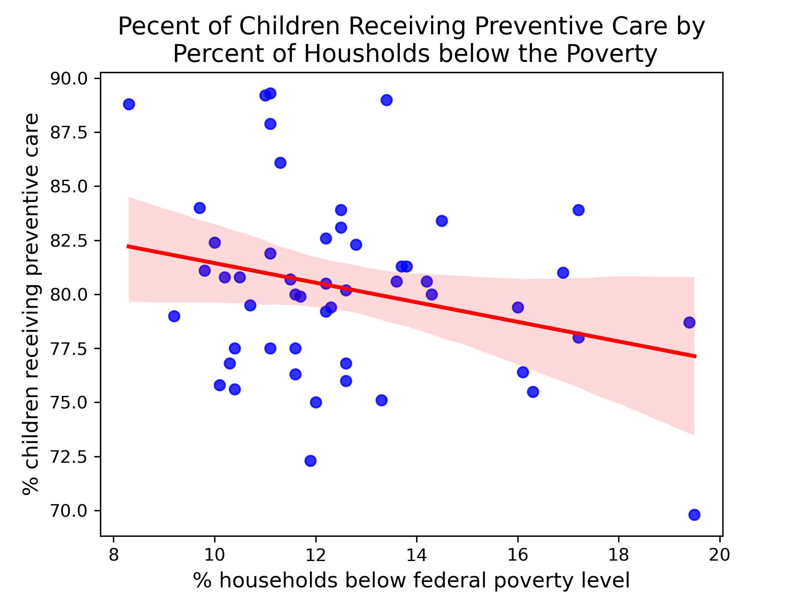
Question 2: What impact does the percentage of children who received by age 24 months all recommended vaccines (AHR, 18114:vaccination, low versus medium or high coverage)
have on children receiving preventative care check-ups (NSCH, state-level, C1/C2, 1 or more visits versus no visits, PrevMed_23)?
Median vaccine coverage was 67.7% across the states. If we considered < 67.5% as low coverage and 67.5% or greater as medium to high coverage, we see that the percentage
of children receiving at least one preventative care visit is slightly higher in the medium or high group. Specifically, in the low immunization group, a median
of 79.4% of children and for the medium or high group, a median of 80.9% of children received a preventative care visit. This suggests that preventative care may
play a role in childhood immunization coverage.
Figure 2
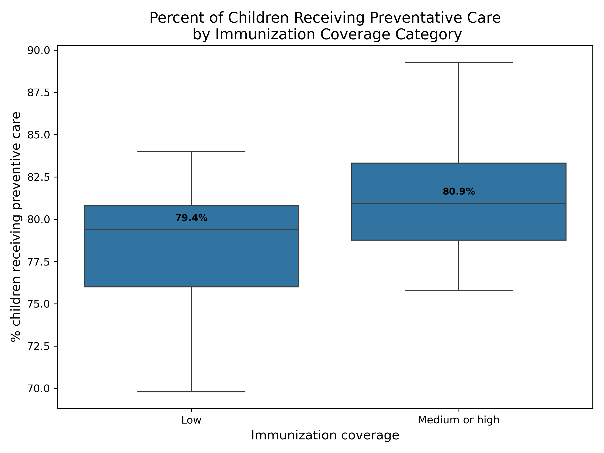
Question 3: How does public health funding per person (AHR, 3837:public health funding) influence number of active primary care providers per 100,000 population (AHR,
17673:primary care provider)?
On average, states spend between $100-200 per capita on public health (median(P25, P75) = $123 (96.0, 156.5)). As shown in Figure 3, as per capita public health
spending increases, the number of active primary care providers per 100,000 people also increased.
Figure 3
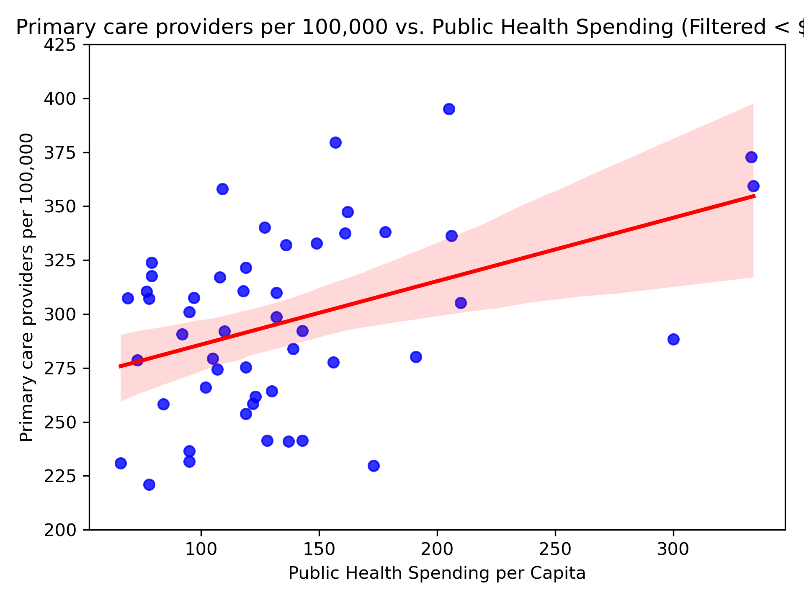
Of note, Washington DC is excluded from Figure 4. DC has active providers per 100,000, and public health spending per capita in DC is $1,084.
Question 4: How does the number of active primary care providers per 100,000 population (AHR, 17673:primary care provider)
relate to a child having a place to receive care regularly (NSCH, state-level, C8, place usually take child when sick, K4Q01)?
As the number of active primary care providers per 100,000 population increases, the percentage of children who have a regular place to
receive care also increases (Figure 4).
Figure 4
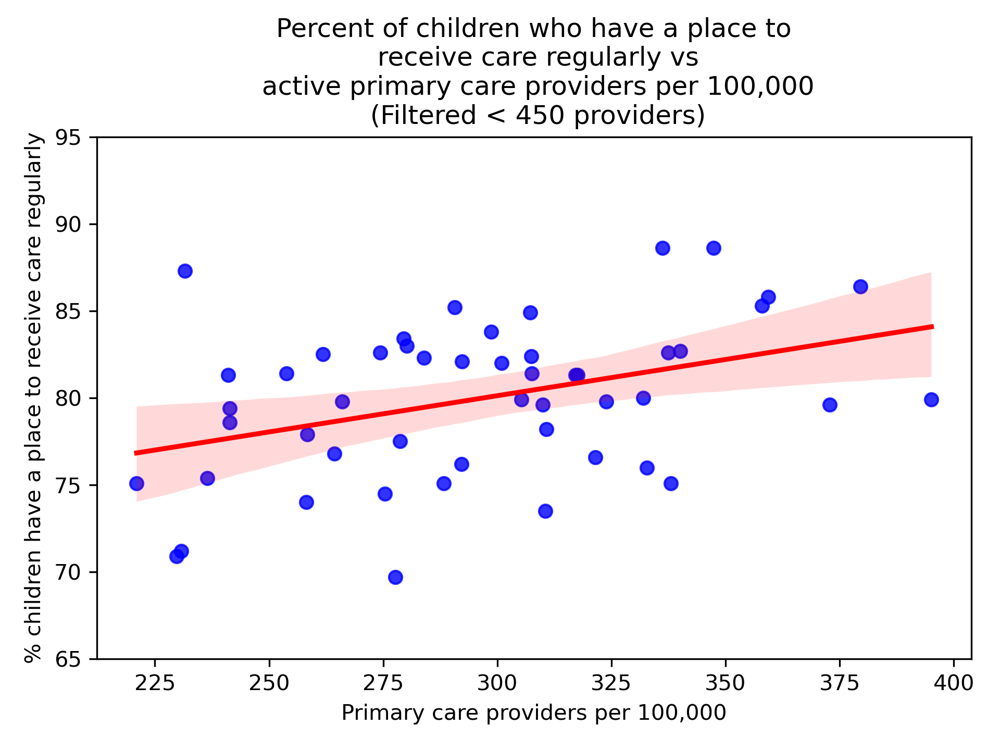
Of note, Washington DC is excluded from Figure 4. DC has active providers per 100,000, and the percent of children in DC who have a place
to receive care regularly is 77.6%.
Question 5: How does at least one preventative care visit (NSCH, individual-level, C1/C2, 1 or more visits versus no visits, PrevMed_23) influence overall child health
(NSCH, individual-level, A1, excellent/very good/good/fair/poor, K2Q01)?
Health status does not differ by whether a child had a preventative care visit. The proportion of children in each of the five health status groups appears
similar for those with and without preventative care (Figure 5).
Figure 5
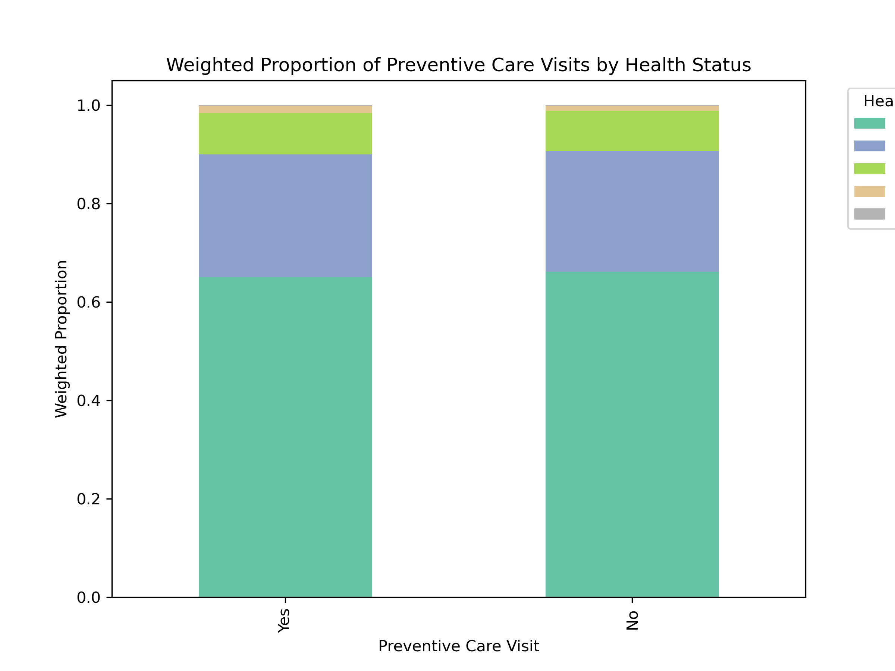
Question 6: What effect does having continuous and adequate insurance (NSCH, individual-level, E2/E3, insurance status, smAdeqIns_23) have on overall child health
(NSCH, individual-level, A1, excellent/very good/good/fair/poor, nomChHlthSt_23)?
As the child'e health status worses from 'Excellent' to 'Poor', we see a trend with adequate insuance coverage decreasing. As shown in Figure 6, among those with
excellent health, 69% have adequate insurance. This drops to 45% having adequate insurance among those with poor health.
Figure 6
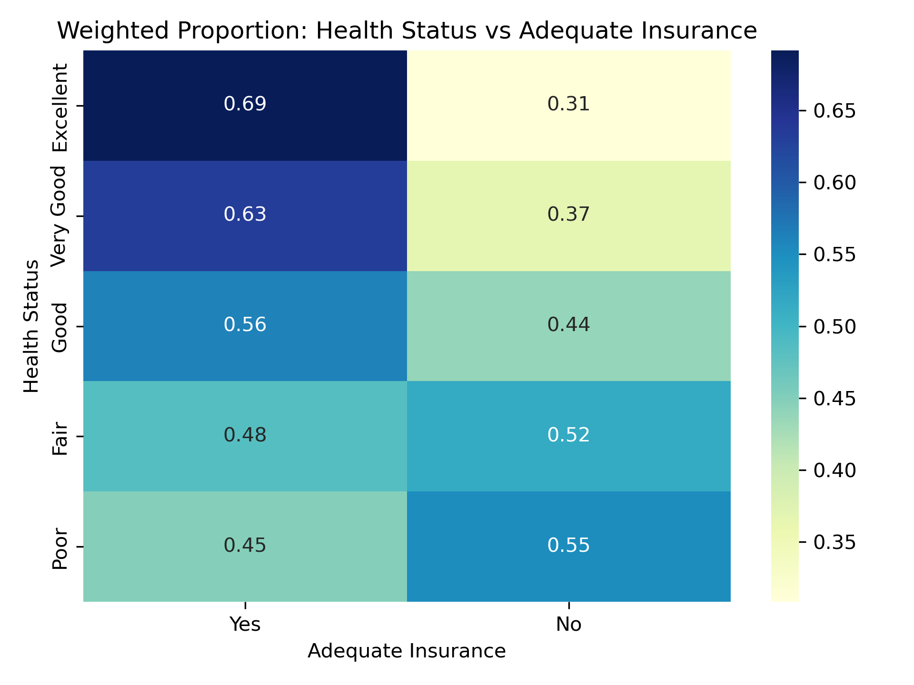
Question 7: How does family's poverty level (NSCH, individual-level, K3, income, povlev4_23 (Income level based on family poverty level status, imputed) ) impact overall
child health (NSCH, individual-level, A1, excellent/very good/good/fair/poor, nomChHlthSt_23)?
As overall health status decreases, the proportion of children at the highest income group (i.e. 400% or more of the poverty level) also decreases (Figure 7a).
The relationship between health status and poverty is also evaluated for those below the federal poverty level in Figure 7b and shows that as health worses more children
are in families below the poverty level.
Figure 7a
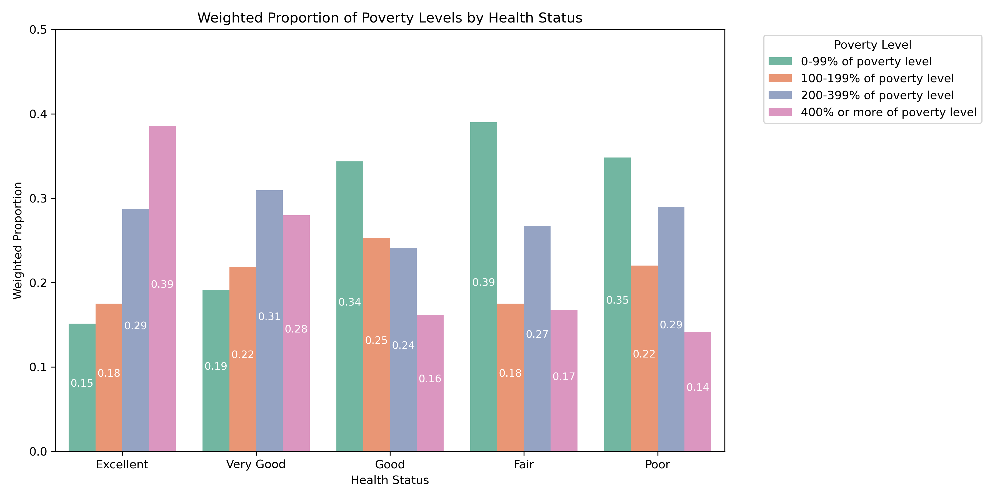
Figure 7b
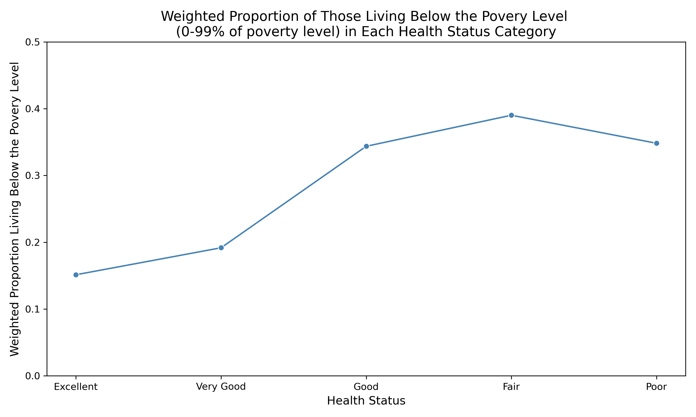
Question 8: What is the relationship between benefits from the Women, Infants, and Children (WIC) Program (NSCH, individual-level, I7, Yes/No, WIC_23)) and overall child health
(NSCH, individual-level, A1, excellent/very good/good/fair/poor, nomChHlthSt_23)?
The most vulnerable health groups are those children in the "good", "fair" and "poor" categories. We see that families that have support from WIC tend to be in the "good" and "fair"
categories and less so in the "poor" health category.
Figure 8
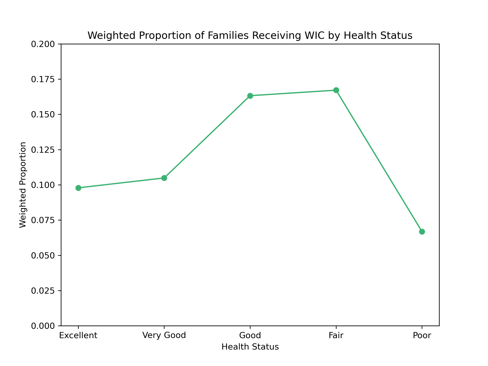
Question 9: Among teenagers, what impact does use of electronics (NSCH, individual-level, H6, time spent in front of the TV/computer/cellphone playing games/social
media (not counting homework), ScreenTime_23) have on whether child slept the average recommended number of hours for age (NSCH, individual-level, H5, hours, HrsSleep_23
(Child slept recommended age-appropriate hours during an average day/on most weeknights, age 4 months – 17))?
Limiting screen time appears to play a role for adequate hours of sleep for teenagers. Once the average hours of screen time exceed 1 hour per day, the weighted proportion of teens
experiencing inadequate sleep nearly doubles from 17% for 1 hour to 33% for 4 or more hours.
Figure 9
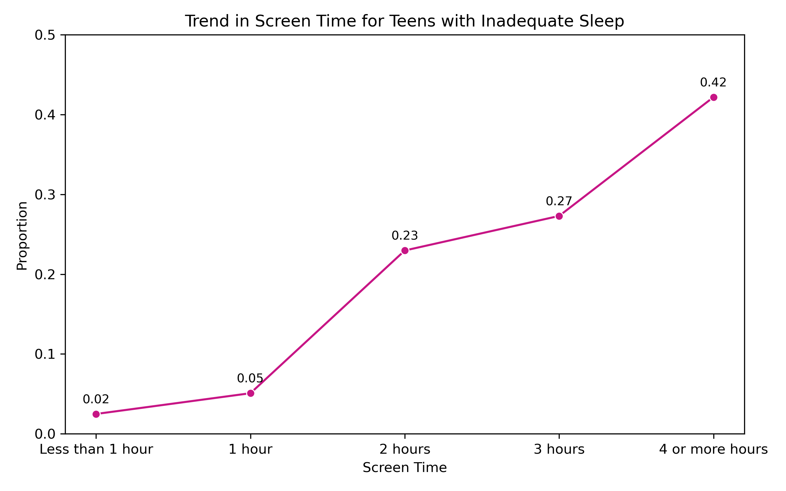
Question 10: Does moving two or more times in the last year (NSCH, individual-level, I11, number of places lived in the last year greater than 2, PlacesLived_23) influence children
receiving preventative care check-ups (NSCH, individual-level, C1/C2, 1 or more visits versus no visits, PrevMed_23)
Children experiencing housing instability or living three or more places in the last year received a preventative care visit 69% of the time. Conversely, 80% of children who did not move more
than once experienced a preventative care visit.
Table 1
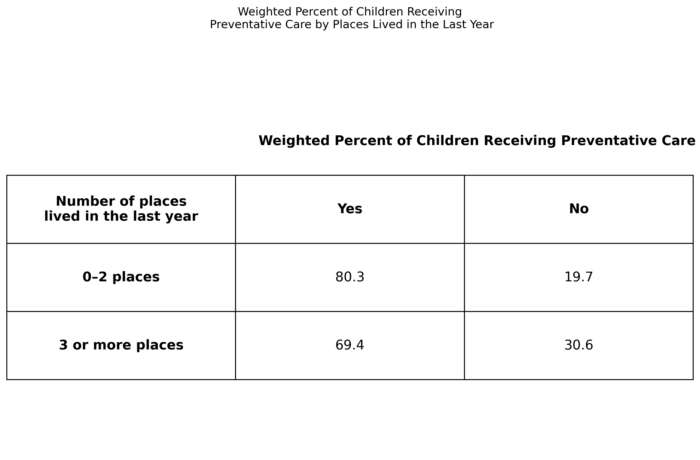
Clustering
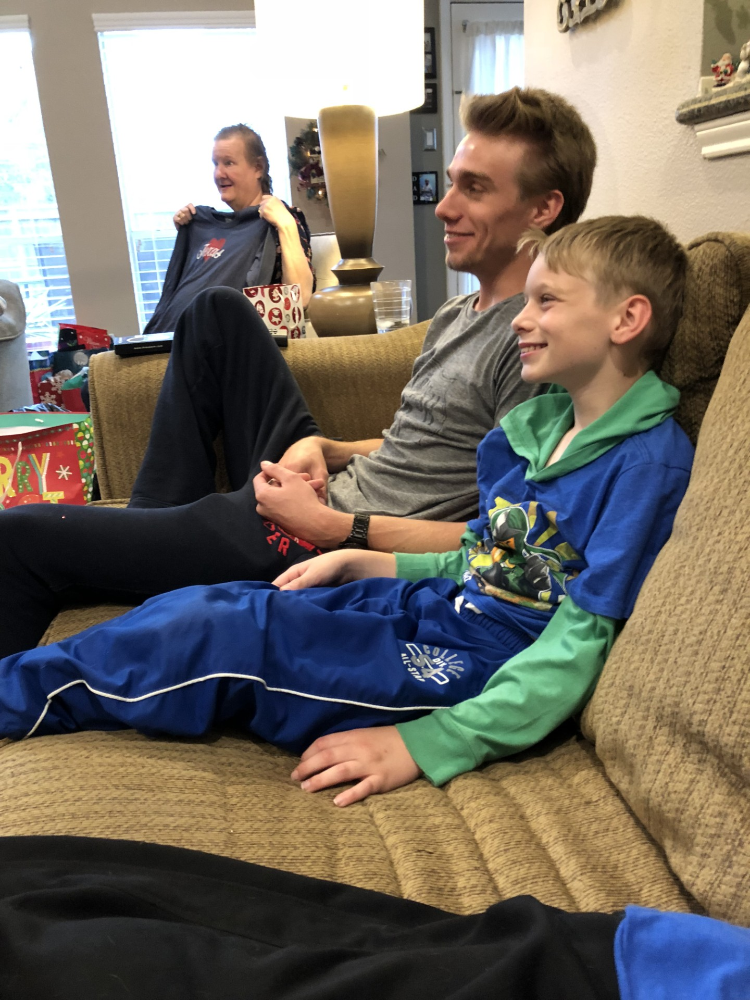
This section includes the results and visualizations from employing K-means and hierarchical clustering.
Overview
Clustering, a type of unsupervised and non-parametric learning, can be carried out primarily through two different approaches. The first utilizes partitional methods in which
observations are organized together based on similar characteristics. K-Means clustering is one of these approaches and groups observations based on the their Euclidean distance from the
cluster centroids. Points are assigned the cluster closest to the given observation. After the first iteration, the process is repeated, recomputing the centroids and the clusters for
each point. This continues until the cluster assignments reach static equilibrium and the clusters remain the same.
Illustration of K Means Clustering (Source: Davis, 2024)
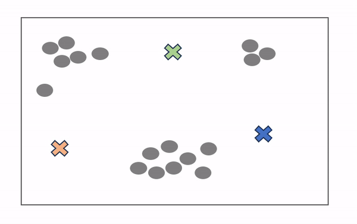
K-Means can be sensitive to the initial pick of k as well as outliers. We can address the challenges of picking k by implementing the elbow method, gap statistic and/or silhouette method.
Although there are more sophisticated clustering methods that do not have these issues, K-Means provides a great first pass for initial data mining.
The second approach is hierarchical clustering, which groups observations together either by splitting observations into smaller and smaller clusters (i.e. divisive or top-down
hierarchical clustering) or joining observations together from the bottom-up (i.e. agglomerative clustering (AGNES)). AGNES begins with each observation as its own cluster. Points are
merged together with other observations that are the most similar to the point, where similarity is based on distance. An advantage of hierarchical clustering is that the method does
not require specifying the number of clusters in advance. Additionally, as with K-Means, distance can assessed using Euclidean distance; however, other distances, such as Manhattan,
maximum and Ward can also be used.
Illustration of Hierarchical Clustering (Source: Davis, 2024)
For this analysis, both K-Means and hierarchical clustering were used to uncover patterns in the data. The primary question of interest stems from Questions 2 and 6, which explore the
relationships between children receiving preventative care check-ups and insurance coverage with good vaccination coverage for children by age two and the overall health of the children.
The outcome of interest for this analysis is good vaccination coverage (< 67.5% of the state population is low coverage and 67.5% or greater is medium to high coverage).
Figure 10
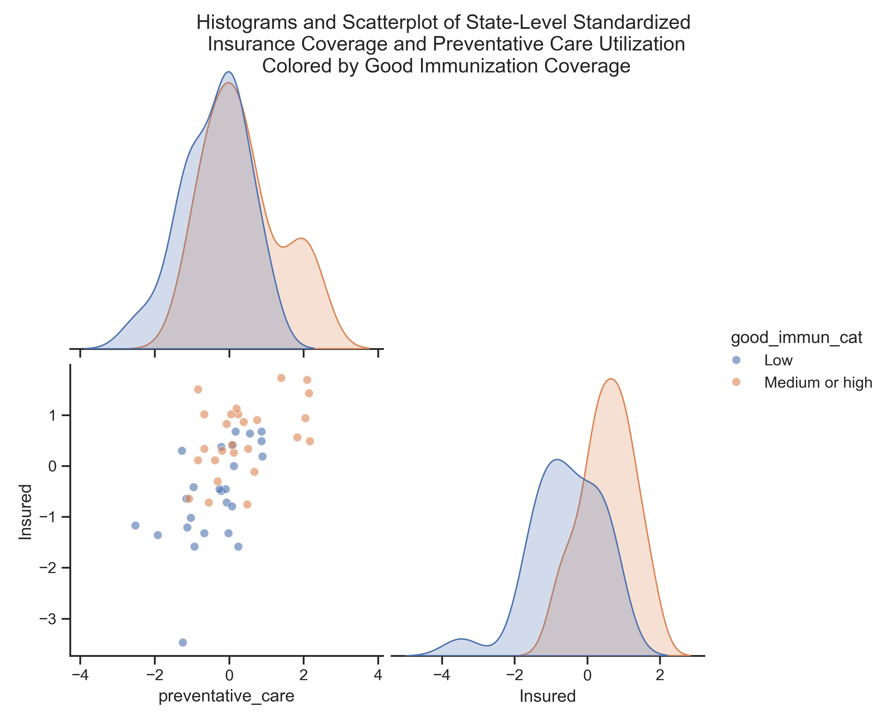
As shown in Figure 10, there is a positive correlation between insurance and preventative care. As the percent of the population of the state covered by insurance increases, the percent
engaging in preventative care also increases. When colored by immunization coverage, we see that most of the states with low coverage also have lower percentages of their population
covered by insurance and preventative care.
Data Preparation
Clustering analysis requires the use of unlabeled numerical data. Unlabeled means that we have not included in the clustering analysis the labeled groupings. As such, for this analysis we
looked for clustering patterns between insurance and preventative care. We did not include immunization coverage in the models. Additionally, because clustering looks at the distance between
points, the features were standardized before analysis. To simplify the interpretation of the data, insurance status was flipped from uninsured to insured (100 - the percent
uninsured). Table 2 shows the original and standardized distributions of the features.
Table 2
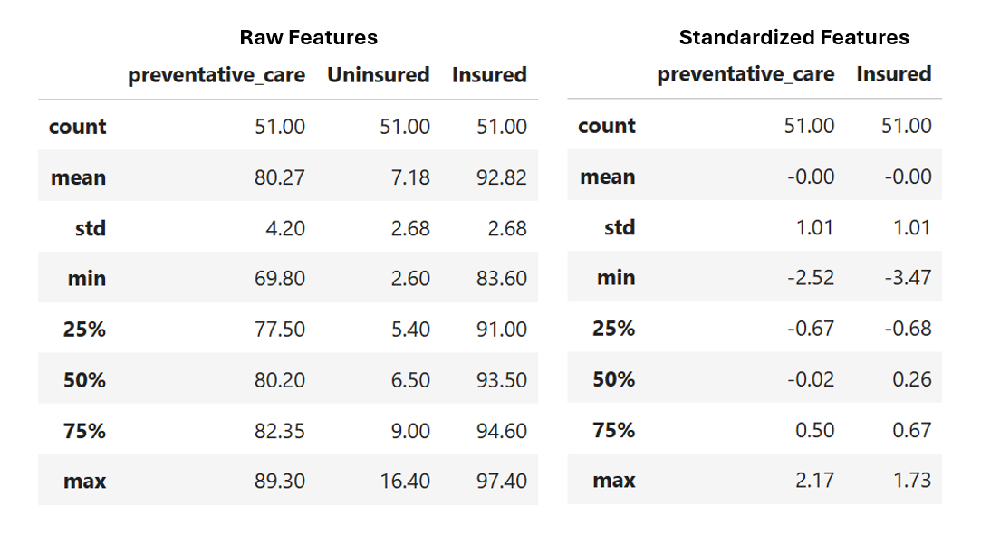
Due to the data use agreement, these data are stored on a private repository here:
df_state_std_cluster.csv.
Code
All programming was completed in Python using the program
3_NSCH_AHR_Cluster_Analysis.
After the data are read in and the features are standardized, the next step of the code is finding the best value for k. From here, the program completes K-Means clustering
with the determined value of k. The code iteratively shows how the clusters stabilize over the iterations. Next the clusters are compared to the true values for immunization status.
The accuracy is assessed and the confusion matrix is generated.
After completing K-Means, the next section of the program focuses on hierarchical clustering for the same features and comparison to the same outcome. The model uses the Agglomerative
or bottom-up method. Cosine Similarity is implemented to measure distance and the average linkage is used. Once the dendrogram is produced, it is cut at two clusters and the clusters
are compared to the true values for immunization status. The accuracy is assessed and the confusion matrix is generated.
Results
Figure 11 shows how the groupings varied when attempting k=2-10 clusters. On visual inspection, 2-3 clusters look the best.
Figure 11
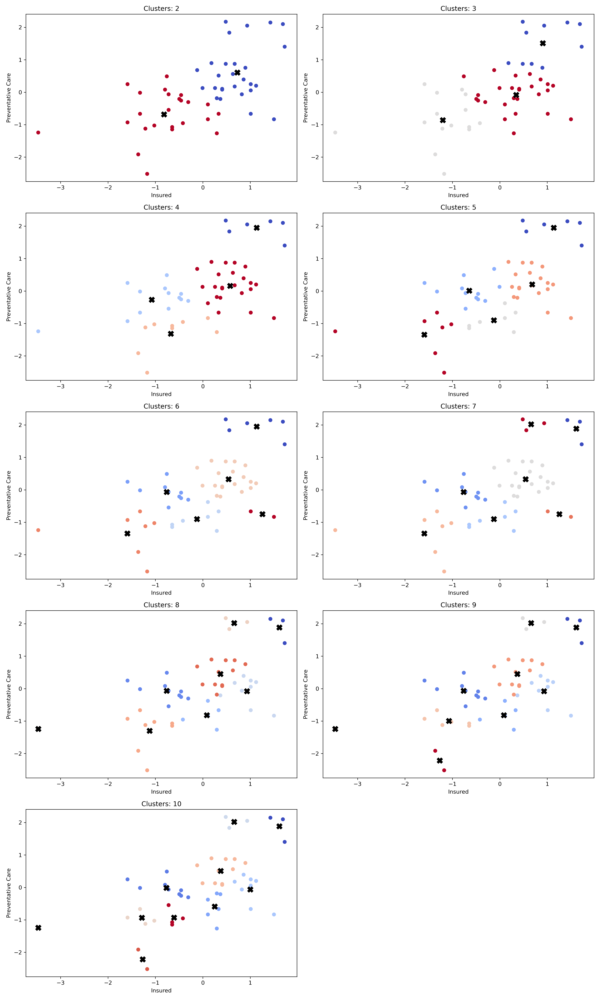
Visual inspection of the clusters was followed by applying the elbow and Silhouette methods to selecting k. The elbow method (Figure 12) was inconclusive, as the graph
descends without a clear "elbow". Conversely, the Silhouette method showed a clear winner with two clusters having the highest value (Figure 13). This is in line with
the visual inspection of the clusters.
Figure 12
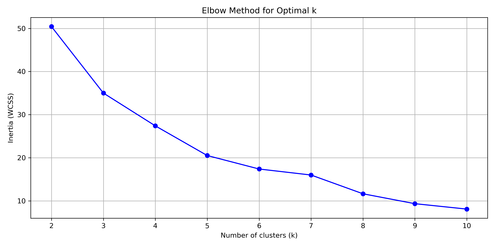
Figure 13
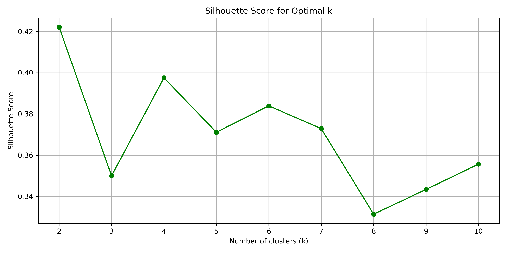
Once two clusters were identified for k, K-Means was completed. Figure 14 shows how the clusters stabilized after the first iteration. The bottom panels of the figure show how
the clusters generated by K-Means analysis compare to the true values for immunization coverage.
Figure 14
The corresponding confusion matrix is below:
[[17 8]
[ 7 19]]
The confusion matrix illustrates that the accuracy is 0.7059 and the misclassification rate is 0.2941. This is visually represented in Figure 15, where we can see that the
clusters differentiated well on the outer edges, while performing less well where the clusters intersect.
Figure 15
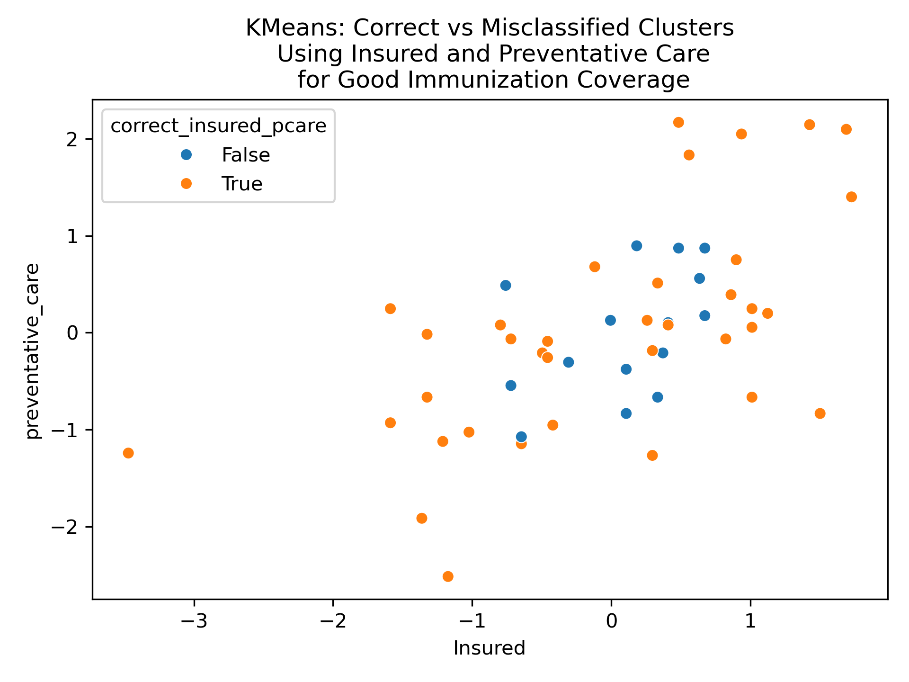
Next, we completed the same analysis using hierarchical clustering techniques. From the dendrogram (Figure 16), we see that the clusters differentiate well at around two clusters,
which is what we found with the Silhouette method in K-Means.
Figure 16
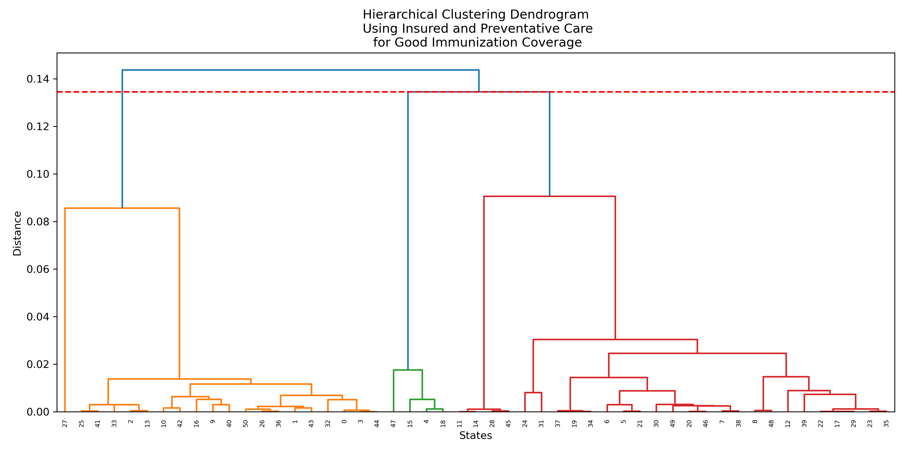
Figure 17 illustrates the comparison of the hierarchical clusters with the true values for immunization coverage.
Figure 17
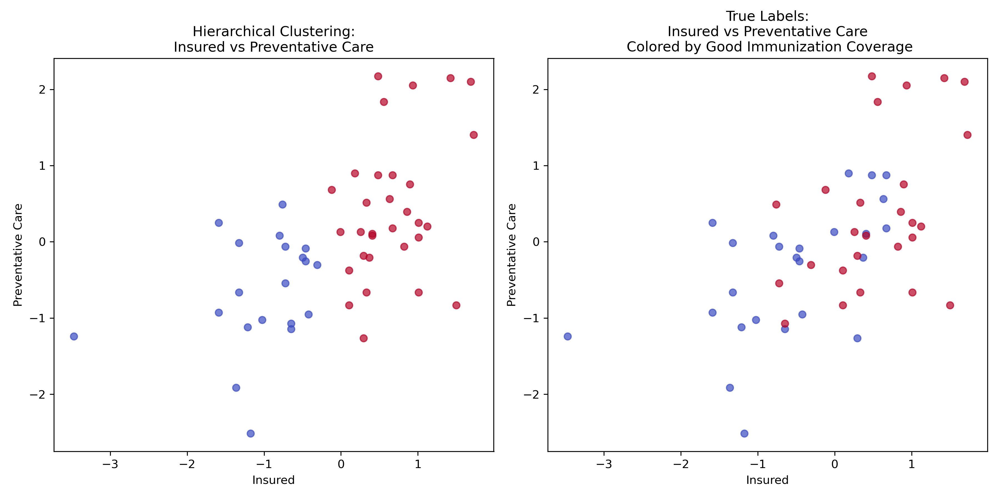
The corresponding confusion matrix is below:
[[16 9]
[ 4 22]]
The confusion matrix illustrates that the accuracy is 0.7451 and the misclassification rate is 0.2549. As such, hierarchical clustering performed better than K-Means. Figure 15
shows the clusters which were correctly identified and those that were missed. As with K-Means, the clusters on the further sides were identified correctly, while the area of
intersection was more problematic.
Figure 18
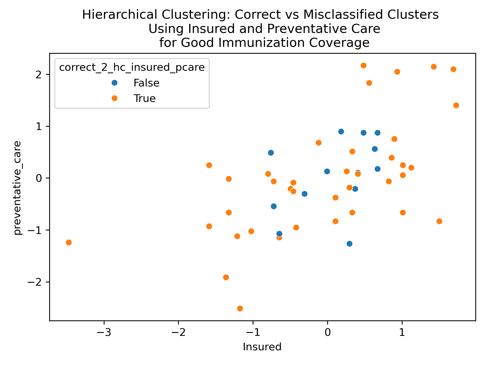
Conclusions
K-Means and hierarchical clustering showed that there are unique similarities within states that have similar rates of insurance and preventative care coverage. States clustering together
with lower coverage tended to also have lower immunization coverage. Those with medium to high insurance and preventative care rates clustered together. This group tended to also have
medium to high immunization coverage. These results are in-line with the visual inspection of the data which showed a positive correlation between insurance and preventative care, as well as
higher immunization rates for states with higher insurance and preventative care coverage. These results identify a gap for states with low coverage. Making care accessible through insurance
and preventative care appears to be related to higher childhood immunization rates.
References
Davis, Alex. Towards Data Science. A Guide to Clustering Algorithms: An overview of clustering and the different families of clustering algorithms. Sep 6, 2024
Website link.
Principal Component Analysis (PCA)
Overview
Many fields, such as medicine, finance and entertainment, generate enormous amounts of data with hundreds or thousands of variables. When modeling these data,
one might expect that having more features would provide deeper insights into the data. However, too many features pose several challenges, including
overfitting, computational complexity, and difficulty visualizing. Additionally, as the number of features increase, the
average distance between data points increases, as illustrated by Andreoni below. These challenges make it difficult to discern patterns in high-dimensional data.
Illustration of Average Distance between Data Points by the Number of Dimensions (Source: Andreoni, 2024)
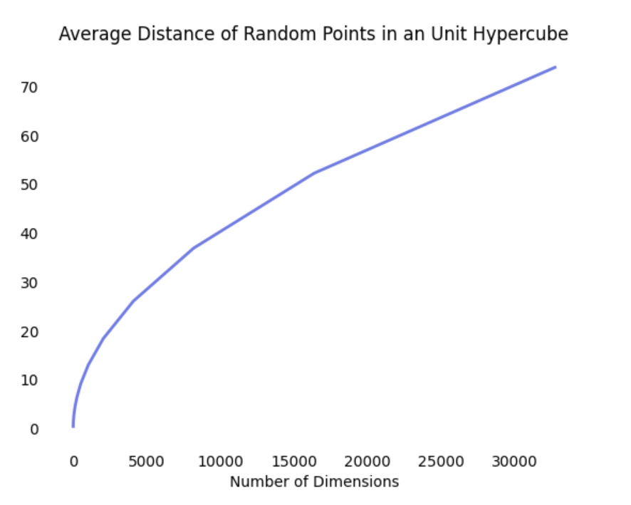
Dimensionality reduction, or decreasing the total number of features while maintaining as much information as possible, provides a solution for the challenges of high-dimensional
data. Several methods of dimensionality reduction exist including methods of feature selection and feature extraction. With feature selection, the data are subset to the primary
variables of interest in the dataset without altering the features. Conversely, with feature extraction the variables are combined or transformed to create new variables, which
maintain the important information in the data. Methods for feature selection and extraction (Ref: GeekforGeeks) include, but are not limited to:
Filtering: Ranking features by relevance.
Wrapping: Keeping features based on model performance.
Embedding: Features selected per model training outcomes.
Backward Feature Elimination: The initial model is the full model of all features. Unimportant variables are iteratively removed until only the most impactful covariates remain.
Forward Feature Selection: This is the reverse of backward feature elimination. It begins with the intercept-only model and incrementally adds only the features that improve model performance.
Random Forest: This ensemble model uses decision trees to pick the most important features.
Linear Discriminant Analysis: Determines the features which in combination separate the data into different classes.
Principal Component Analysis: Variables are converted into uncorrelated principal components.
For this analysis, we are using Principal Component Analysis (PCA). PCA distills the data down into principal components, which are orthogonal to one another. These new, uncorrelated features are then
projected onto a hyperplane. In the simple illustration below by Andreoni, we can see that PCA transforms a two-dimensional space into a single dimension.
Illustration of Principal Component Analysis in a 2D Space (Source: Andreoni, 2024)
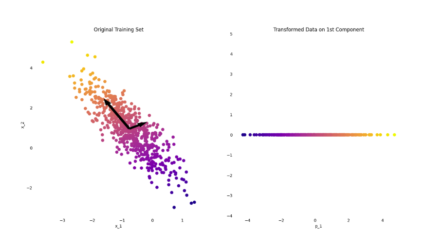
The mathematical elements of principal components are their eigenvalues and eigenvectors. Eigenvectors are vectors that when scaled remain on the same line (i.e. they either do not
change their direction or they flip to the opposite direction. The scaling factor for the eigenvectors is the corresponding eigenvalue, which is the magnitude of the scaling.
Data Prep
PCA requires the use of unlabeled numerical data. Unlabeled means that we have not included in the analysis the labeled groupings. For this analysis we included ten continous variables, specifically
the following state-level features were kept and standardized: percent of children receiving at least one preventative_care visit, percentage of children in excellent or very good health, percent of
children who had a place they usually went to for healthcare, percentage of the population younger than age 18, percentage of adults age 25 and older with at least a high school diploma or equivalent,
percentage of households living at or above the federal poverty level, number of active primary care providers per 100,000 population, public health funding per capita, percentage of the population
covered by private or public health insurance, and sum of the social support and engagement measures. Because we were interested in binary immunization coverage as an outcome, we did not include this
variable in the PCA. Figure 19 illustrates the pairwise distributions of the variables colored by immunization coverage. Also provided is a heat map of the standardized distributions of the features
(Figure 20).
Figure 19
Figure 20
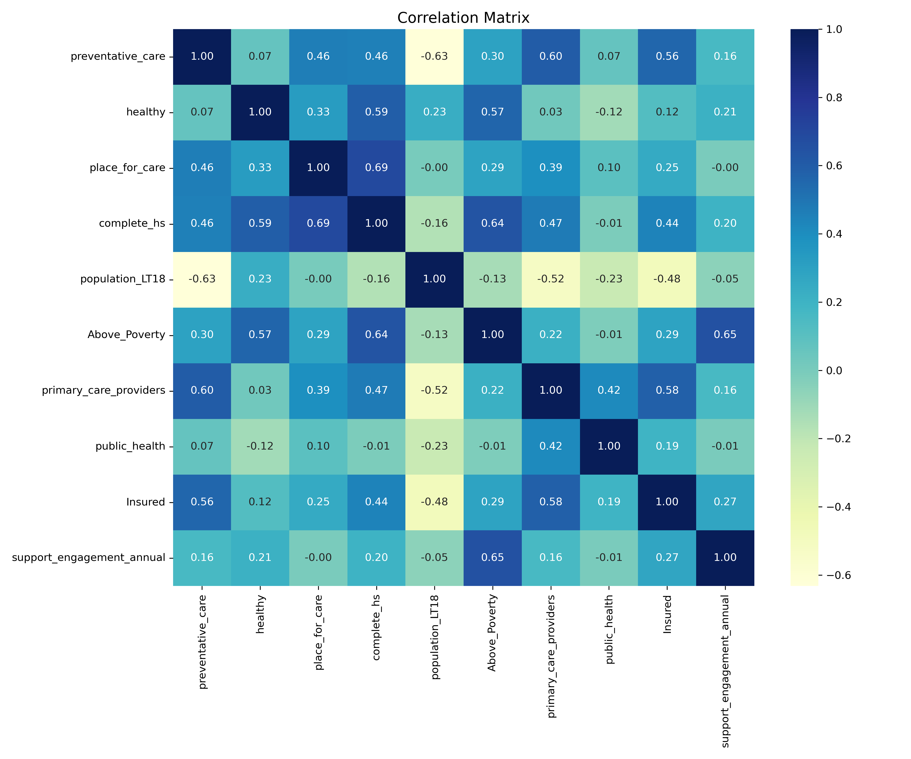
Using the scaled features, the principal components were calculated and added to the dataframe. Due to the data use agreement, these data are stored on a private repository here:
df_state_std_PCA.csv.
Code
The following Python program contains the code for the principal component analysis:
4_NSCH_AHR_PCA_Analysis.
The first step of the code is to read in the state-level data from NSCH and AHR. Next, the following continuous state-level features were kept and standardized: percent of children receiving at least one
preventative_care visit, percentage of children in excellent or very good health, percent of children who had a place they usually went to for healthcare, percentage of the population younger than
age 18, percentage of adults age 25 and older with at least a high school diploma or equivalent, percentage of households living at or above the federal poverty level, number of active primary care
providers per 100,000 population, public health funding per capita, percentage of the population covered by private or public health insurance, and sum of the social support and engagement measures.
Next, Eigenvectors, eigenvalues and loadings were calculated using both numpy and sklearn. Scree, biplots and scatter plots of the principal components were produced, as well as tables and figures of the
cumulative variance and loadings. Lastly, the program joins the PCA data with the standardized features, outputting a CSV file of the resulting dataframe.
Results
Eigenvectors, eigenvalues and loadings were calculated two different ways and compared. First, using numpy the covariance matrix for the features was generated and the eigenvalues and eigenvectors calculated
using numpy linalg.eig(). These were sorted in descending order by eigenvalue. The loadings were calculated using the equation: loading = eigenvectors_sorted * np.sqrt(eigenvalues_sorted). The same calculations
were repeated using sklearn PCA() to complete the principal component analysis, specifically:
The eigenvalues calculated using numpy were identical to sklearn.decomposition PCA(). The sign of the eigenvectors for PC4 and PC10 are opposite between the two methods. Otherwise, the eigenvectors and loadings
are the same between the methods.
Scree plots indicated that PC1 accounted for approximately 43% of the variation in the data, followed by PC2 with 23% of the variance (data not shown). When looked at cumulatively, PC1-PC7 accounted for 95% of
the total data variation (Figure 21). Meeting this threshold with seven principal components allows us to reduce our dimensions from 10 to seven.
Figure 21
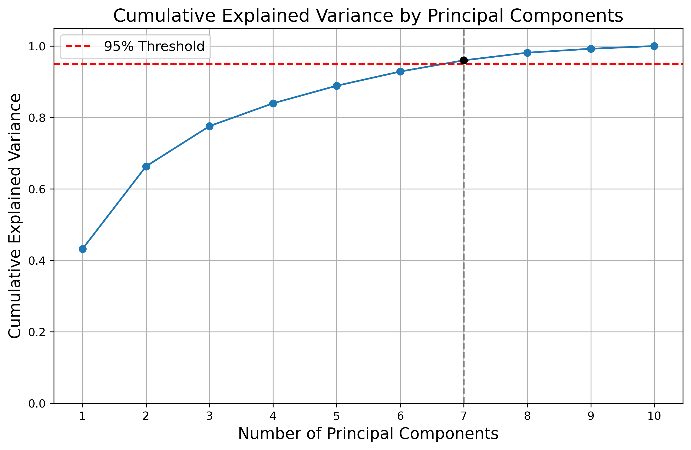
To better understand the direction, magnitude and features involved in each principal components, we completed a loading analysis. Table 3 provides the loadings for each principal component and feature.
Interestingly, the only feature positively correlated with PC1 is the state population under age 18. All other variables are negatively correlated with PC1. We see greater variability in the loadings for
PC2 with excellent or good health, a place for care, completing high school, above the poverty line, engagement in the community and the population less than 18 showing positive correlation with PC2.
Table 3
When we look at the biplot for PC1 and PC2, we find that PC1 uniquely separates states with large numbers of children under age 18 that also have lower values for primary care providers, preventative care and
insurance (Figure 22). States in this quadrant with positive PC1 and positive PC2 include many Southern and Southwest states - South Carolina, Georgia, Arkansas, Oklahoma, Texas and Nevada, as well as
Indiana and New Jersey (Figure 23). The states in the upper-left quadrant where PC1 is negative and PC2 is positive, have higher levels of health, income, completing high school, places to regularly receive
care and engagement. However, this same quadrant has lower levels for features related to health care access (primary care providers, preventative care and insurance). This suggests that although these states
may have better education and less poverty, there may be gaps in health care coverage. Western states (Utah, Idaho, Colorado, Wyoming, Montana, Washington) and mid-Western states (South Dakota, North Dakota,
Minnesota, Kansas, Nebraska, Iowa, Illinois, and Ohio) primarily make up this group. Arkansas, Virginia and Maryland are also included. When both PC1 and PC2 are negative (bottom-left quadrant), we see that
states in this quadrant are higher in primary care providers, preventative care and insurance. These states are lower in population under 18 with higher completion of high school and percentage
above the poverty line, suggesting that what makes them unique is the high health care coverage. States in the last quadrant where PC1 is positive, but PC2 is negative have higher population < 18 with some
healthcare services available and weaker education and economic measures.
Figure 22
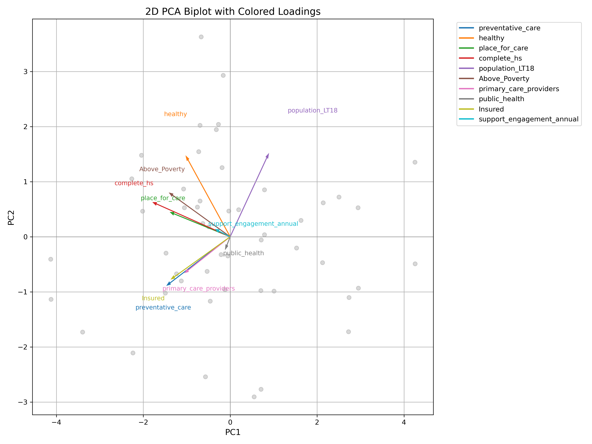
Figure 23
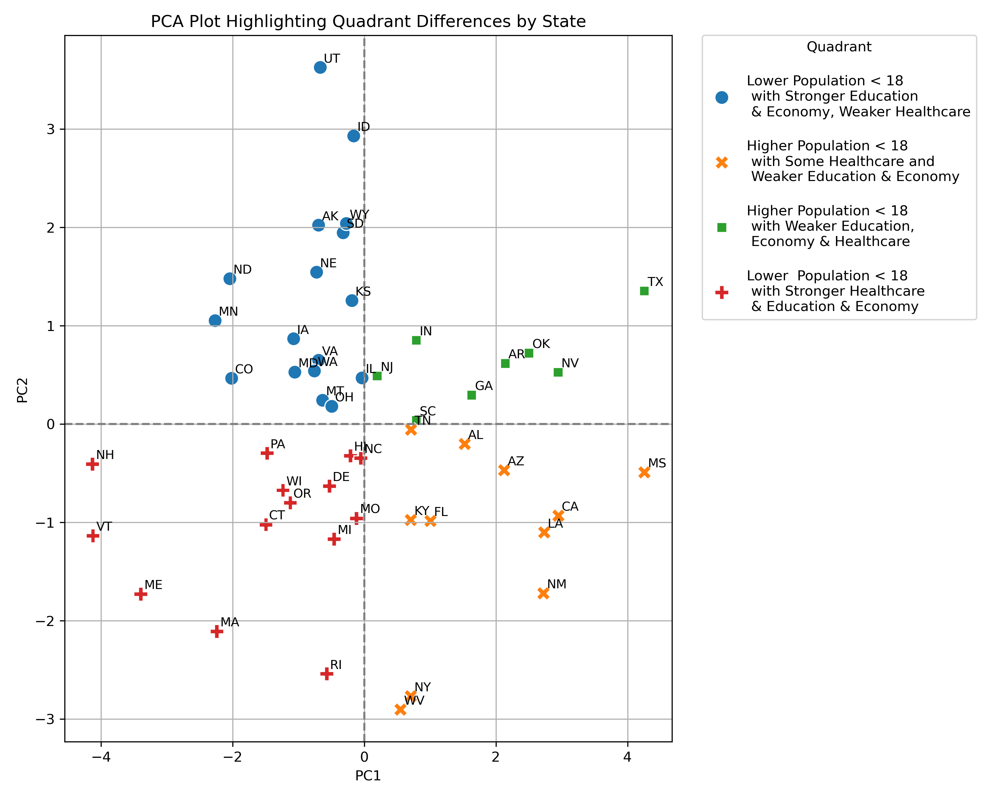
Looking at a 3D depiction of PC1, PC2, and PC3, we see that coloring by immunization coverage illuminates an interesting pattern in the data. Specifically, higher values of PC1
and PC2 with lower values of PC3 align with lower immunization coverage (Figure 24). Conversely, lower values of PC1 and PC2 have medium to high immunization coverage. These
observations consistently follow the loading and quadrant analyses above.
Figure 24
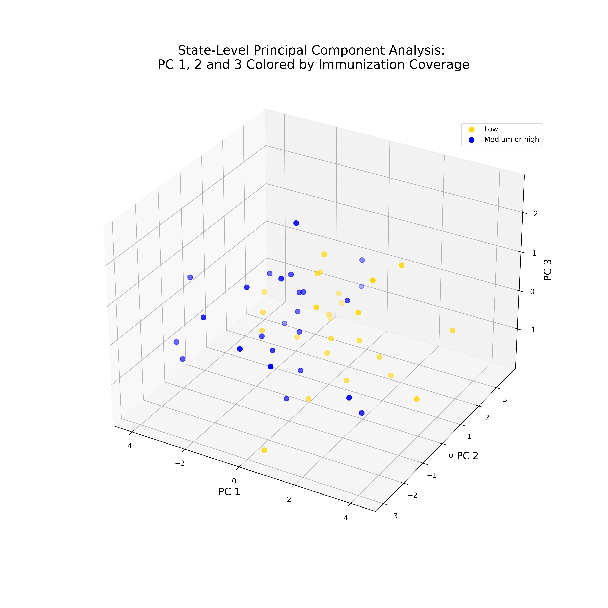
Conclusions
Through PCA, we found that states with large numbers of children under the age of 18 that also have lower values for primary care providers, preventative care and
insurance experience lower immunization coverage. As with the cluster analysis, these results support that higher immunization rates occur in states with higher insurance and preventative care coverage.
These results identify a gap for states with high proportion of children and a low proportion of preventative care, providers and insurance coverage.
References
1. Andreoni, Riccardo. Dimensionality Reduction Made Simple: PCA Theory and Scikit-Learn Implementation:
Tame the Curse of Dimensionality! Learn Dimensionality Reduction (PCA) and implement it with Python and Scikit-Learn.
Towards Data Science. Feb 7, 2024.
Website link.
2. Sena, Marcus. Principal Component Analysis Made Easy: A Step-by-Step Tutorial. Implement the PCA algorithm from scratch with Python.
Towards Data Science. Jun 8, 2024.
Website link.
3. Feature Selection Techniques in Machine Learning. GeeksforGeeks. Aug 30, 2025.
Website link.
4. What is Feature Extraction. GeeksforGeeks. Aug 30, 2025.
Website link.
5. Mueller, Vincent. Eigenvalues and eigenvectors in PCA: What do they tell us about our data? Sep 18, 2021.
Website link.
Naive Bayes
Overview
Naïve Bayes classification is a method of supervised learning where the model predicts the target variable by calculating the probability of each class. The method
relies on Bayes’ Theorem for the calculation of conditional probabilities, which states:
In terms of our target class and the features, we have:
\(P(C|X)\) is the posterior probability of class C, given the features X. This is the conditional probability of interest.
\(P(X|C)\) is the likelihood of features X, given class C. This quantity is often known or easier to calculate than \(P(C|X)\).
\(P(X|C)\) = \(P(x_1, x_2, x_3,…,x_n|C) = \prod_{i=1}^{n}P(x_i|C)\)
\(P(C)\) is the prior probability of class C and is calculated as the number in class C divided by the number in all classes.
\(P(X)\) is the marginal probability of the features and acts as a normalizing constant.
Naïve Bayes is used to find the class C that maximizes the posterior (\(P(C|X)\)). Since \(P(X)\) is the same for all classes, we can ignore the denominator in the
classification. Naïve Bayes assumes that all features (\(x_1, x_2, x_3,…,x_n\)) are conditionally independent given the class label. The algorithm stores probability
distributions for each class and feature. The type of distribution depends on the type of features, specifically:
Multinomial Naïve Bayes: discrete features (e.g. word counts)
Bernoulli Naïve Bayes: binary features (e.g. Yes/No, Present/Absent, True/False)
Gaussian Naïve Bayes: continuous features (e.g. test scores)
Illustration of three main types of Naive Bayes Classifiers (Source: Baladram, 2024)
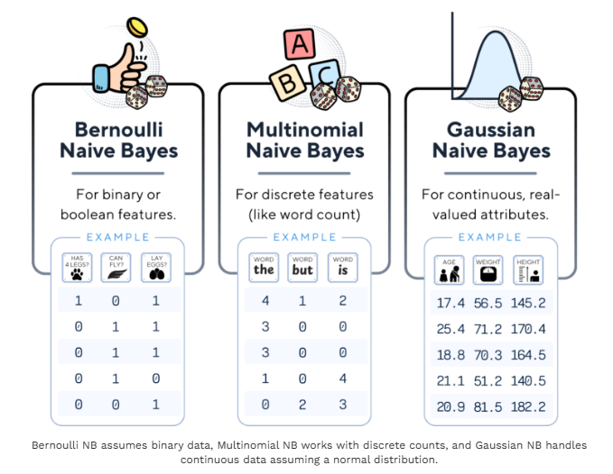
It is possible that a given class does not contain any events. Since we are taking the product by each feature, a zero probability for a given feature would result
in a total probability of zero. As such, we implement Laplace Smoothing which adds one to the numerator to prevent zero probabilities. For example, the probability
that a word belongs to a given class then becomes:
\[
P(\text{word belongs to class}) = \frac{\text{count of the word in the class} + 1}{\text{total words in the class} + \text{magnitude of the full set of words}}
\]
As a classification algorithm, Naive Bayes has many uses, including sentiment analysis, image recognition, and recommendation systems. Naive
Bayes is also used for predicting medical diagnoses from symptom data. Additionally, it may be used for text classification to aid in spam filtering or
documentation categorization.
Data Prep
Both multinomial and Bernoulli Naive Bayes were preformed. As explained above, multinomial Naive Bayes requires discrete features (such as word counts). From the
family-level data from NSCH, we selected count variables. Specifically, the following features were kept and missing values were replaced with the mode:
five-level health status, child's screen time usage, child's age, three-level family food and cash assistance, number of family members in the household, and
highest-level of adult education for the family. The target variable of inadequate hours of sleep for age was also kept and replaced with the mode if missing. Figure 25a
shows the features selected for multinomial Naive Bayes by the adequacy of sleep among teenagers.
Figure 25a
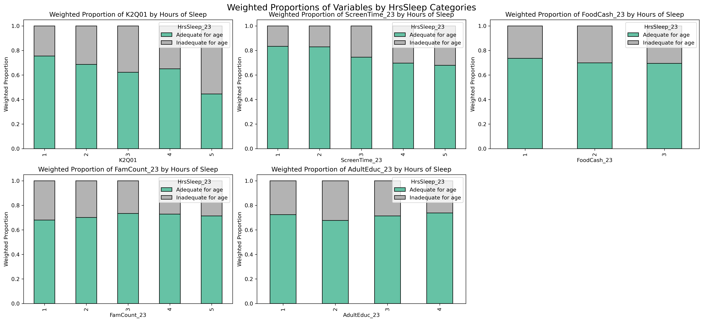
Features, target and sample weights are split into training and test sets. The split worked well for a relatively even distribution of the target variable, as shown
in Figure 25b. The training and test data are disjoint because these data sets serve different purposes. The training data are used to train the model and help it to
learn pattern from the data. The test data are used to evaluate the model's perfomance on unseen data. If the model is tested on the same data it was trained on, it
may appear perform better than it actually does, which could lead to misuse of the model. Figures 25c and 25d provide the first five five rows of data for the training and testing data, respectively.
Figure 25b
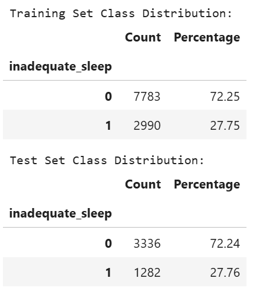
Figure 25c
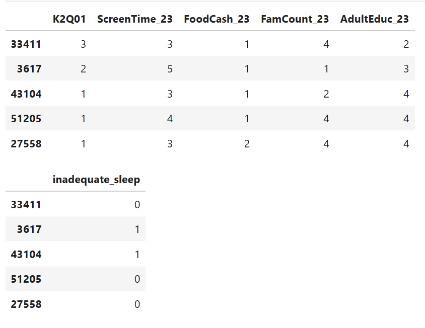
Figure 25d
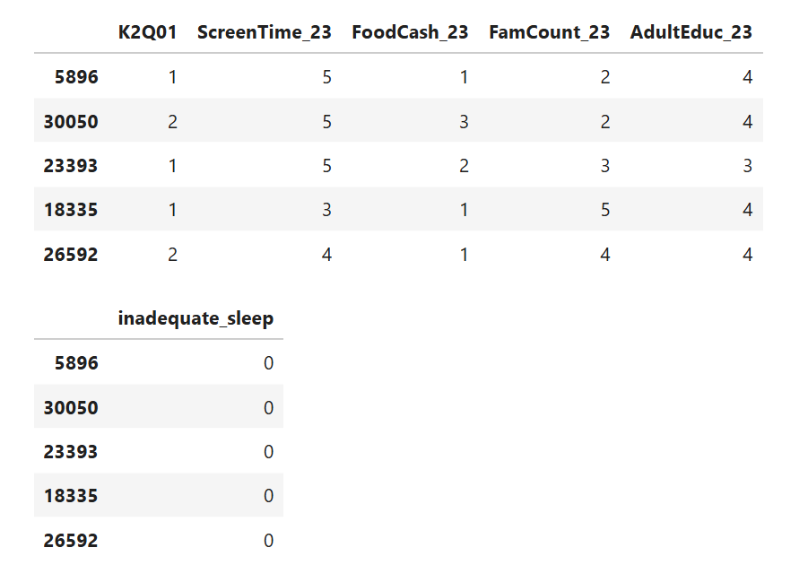
The Bernoulli Naive Bayes analysis required binary features. Family-level data from NSCH for the following features were kept and missing values were replaced with
the mode: child's screen time usage, child's age, housing instability, family food and cash assistance, adequate and continuous insurance, health status, preventative care
visits, and a place to get health care. Dummy variables were created for the features. The reference categories were NOT dropped, as all categories are needed to
complete the Naive Bayes analysis. The target variable of inadequate hours of sleep for age was also kept and replaced with the mode if missing.
The raw features by adequacy of sleep among teenagers are provided in Figure 26a.
Figure 26a
Features, target and sample weights are split into training and test sets. The split worked well for a relatively even distribution of the target variable, as shown
in Figure 26b. Figures 26c and 26d provide the first five five rows of data for the training and testing data, respectively.
Figure 26b
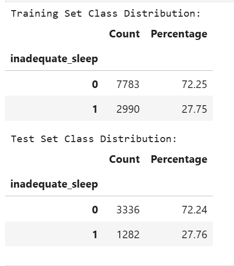
Figure 26c
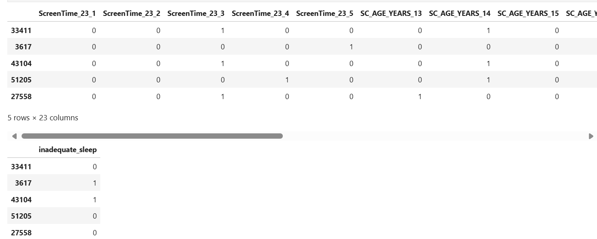
Figure 26d
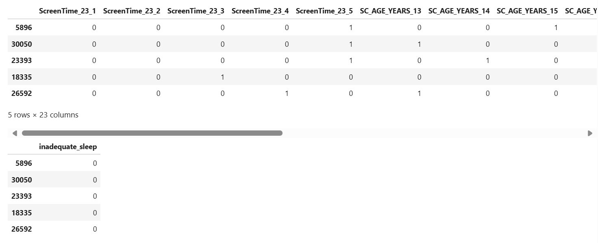
Code
The following Python program contains the code for the Multinomial Naive Bayes analysis:
5a_NSCH_Multinonial_Naive_Bayes_Analysis.
The first step of the code is to read in the family-level data from NSCH. Next, the following features were kept and missing values were replaced with the mode:
five-level health status, child's screen time usage, child's age, three-level family food and cash assistance, number of family members in the household, and
highest-level of adult education for the family. The target variable of inadequate hours of sleep for age was also kept and replaced with the mode if missing.
Features, target and sample weights are split into training and test sets.
Next, the Multinomial Naive Bayes classifier is instanciated and fit with the above target, feature and sample weight variables using the training data. The confusion
matrix was assessed and the model performed poorly at a 0.5 threshold. As such, the optimal threshold was assessed from accuracy, recall and f-1 scores. After determining
a threshold of 0.3 was ideal, the model was refit at this level. The following hyperparameters were used: 'alpha': 1.0, 'class_prior': None, 'fit_prior': True,
'force_alpha': True. Measures of model performance are calculated, including weighted accuracy, recall, f1-score and ROC/AUC for the test set. This follows with the
calculation of log probabilities for the features. Finally, partial dependency plots are created for each feature.
The following Python program contains the code for the Bernouilli Naive Bayes analysis:
5b_NSCH_Bernoulli_Naive_Bayes_Analysis.
The first step of the code is to read in the family-level data from NSCH. Next, the following features were kept and missing values were replaced with the mode:
child's screen time usage, child's age, housing instability, family food and cash assistance, adequate and continuous insurance, health status, preventative care
visits, and a place to get health care. Dummy variables were created for the features. The reference categories were NOT dropped, as all categories are needed to
complete the Naive Bayes analysis. The target variable of inadequate hours of sleep for age was also kept and replaced with the mode if missing. Features, target
and sample weights are split into training and test sets.
Next, the Bernoulli Naive Bayes classifier is instanciated and fit with the above target, feature and sample weight variables using the training data. The following
hyperparameters were used: 'alpha': 1.0, 'binarize': 0.0, 'class_prior': None, 'fit_prior': True, 'force_alpha': True. Measures of model performance are calculated,
including weighted accuracy, recall, f1-score and ROC/AUC for the test set. This follows with the calculation of log probabilities for the features. Finally, partial
dependency plots are created for each feature.
Results
The weighted Multinomial Naive Bayes classifier was first run with the default threshold of 0.5. As shown in Figure 27, the model performed poorly with zero true
positives detected. As such, we conducted an analysis of the accuracy, recall and f1-scores by various thresholds (Figure 18 and 29) and determined that a threshold
of 0.3 provided the best balance of these measures.
Figure 27
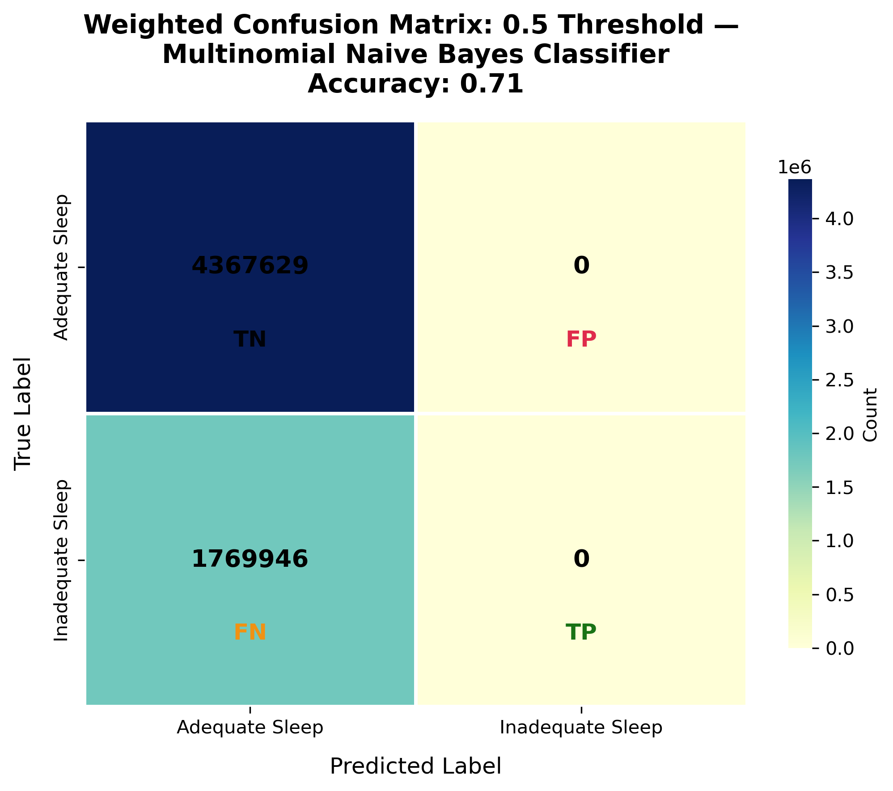
Figure 28
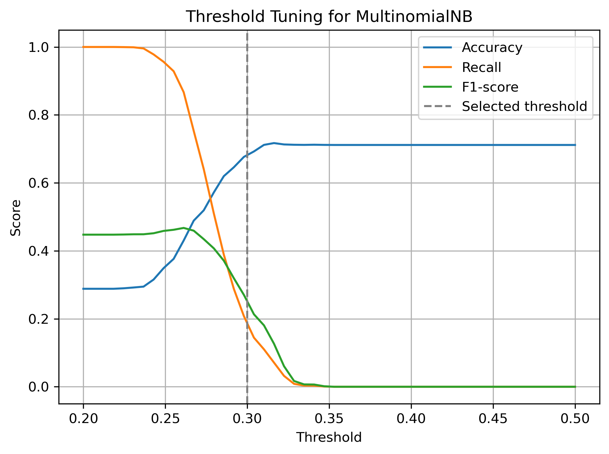
Figure 29
The multinomial Naive Bayes model was updated with a threshold of 0.3, rerun and assessed for performance. The updated model performed better (Figure 30), although
there were more false positive results, as one would expect with a threshold of 0.3. The accurracy, f1-score and recall of the model were 0.68, 0.25 and 0.18,
respectively. The area under the curve was only 0.56, or slightly better than chance (Figure 31).
Figure 30
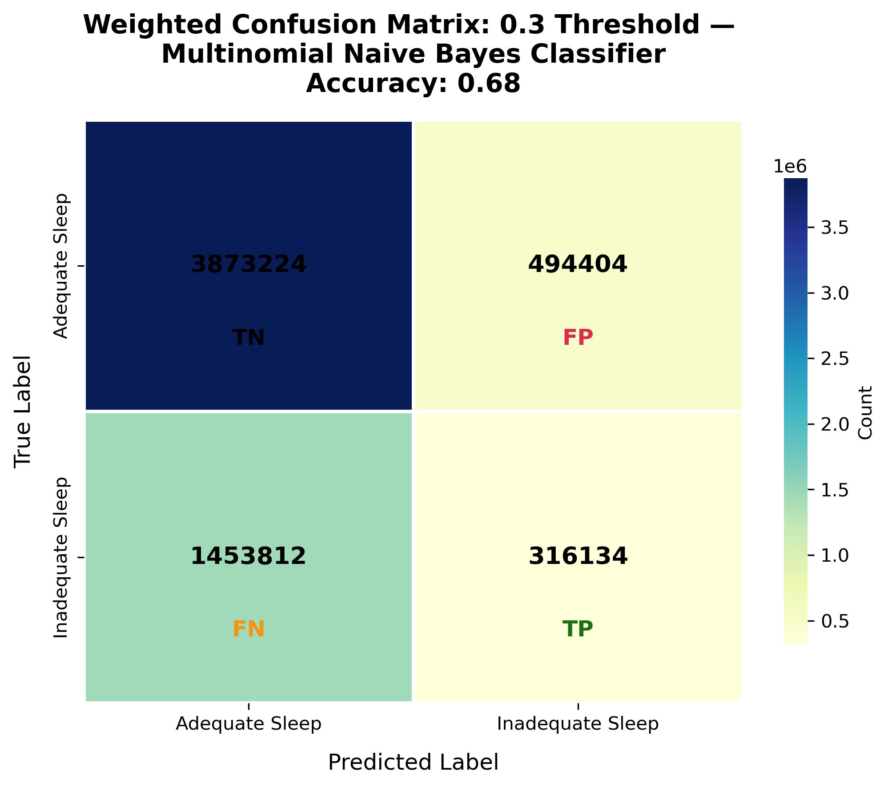
Figure 31
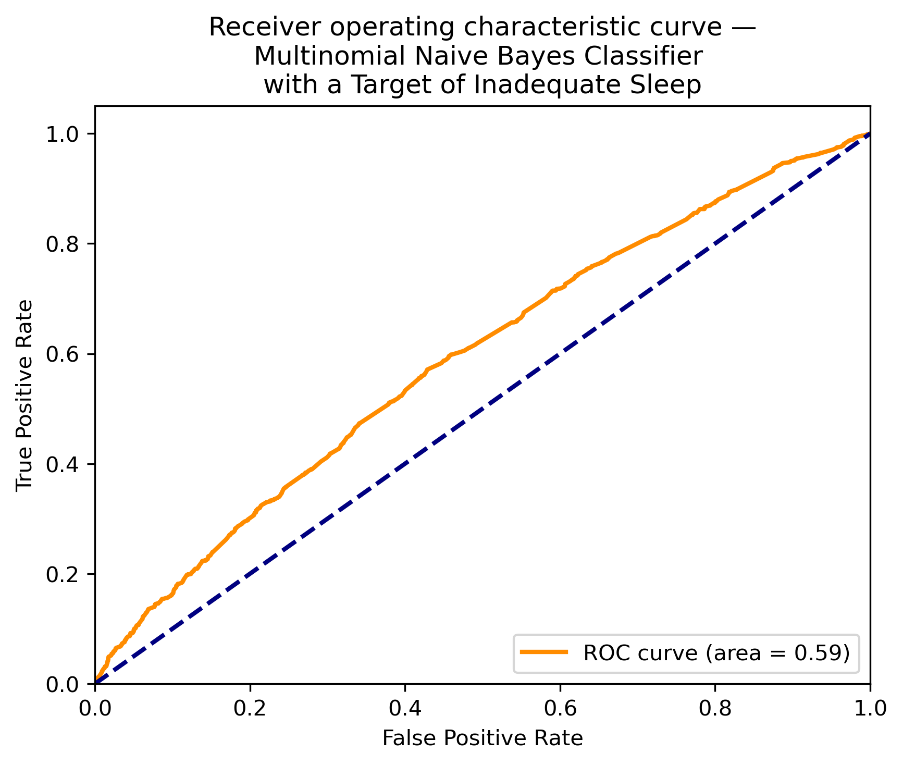
To better understand the relatioship between the features and the target variable, we calculated log-probabilities for each feature. A positive log-probability
score indicates that the feature is more associated with class 1 (inadequate sleep). A negative score means it is more associated with class 0 (adequate sleep).
The magnitude of the score shows how influential the feature is. As seen in Figure 32, the child having poorer health status and greater screen time are associated
with inadequate sleep, while care givers having greater education and larger family size are associated with adequate sleep. We verified these relationships with
partial dependency plots (data not shown).
Figure 32
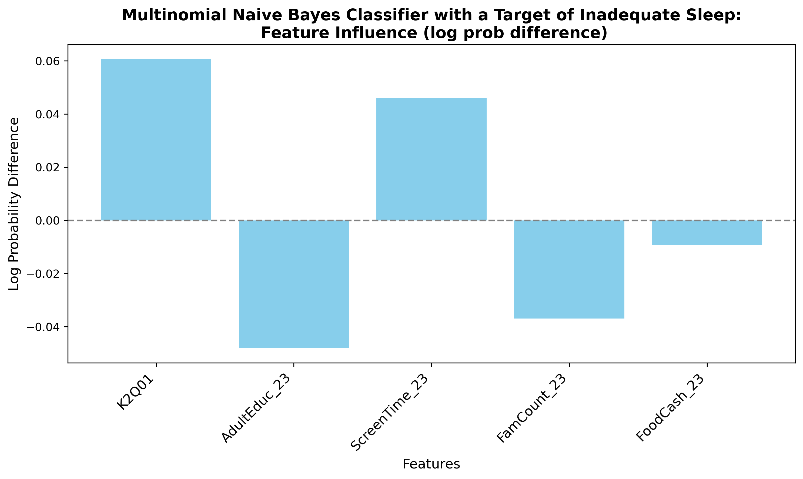
In addition to a multinomial Naive Bayes analysis, we also completed a Bernoulli Naive Bayes analysis. This approach appeared to work much better with our available
data. Creating dummy variables for multi-level features allowed us to differenciate the influence of the groupings within the features. The confusion matrix is provided
in Figure 33. Although the accuracy was okay at 0.70, the f1-score (0.23) and recall (0.15). As illustrated by the ROC-curve in Figure 34, the area under the curve was
0.66.
Figure 33
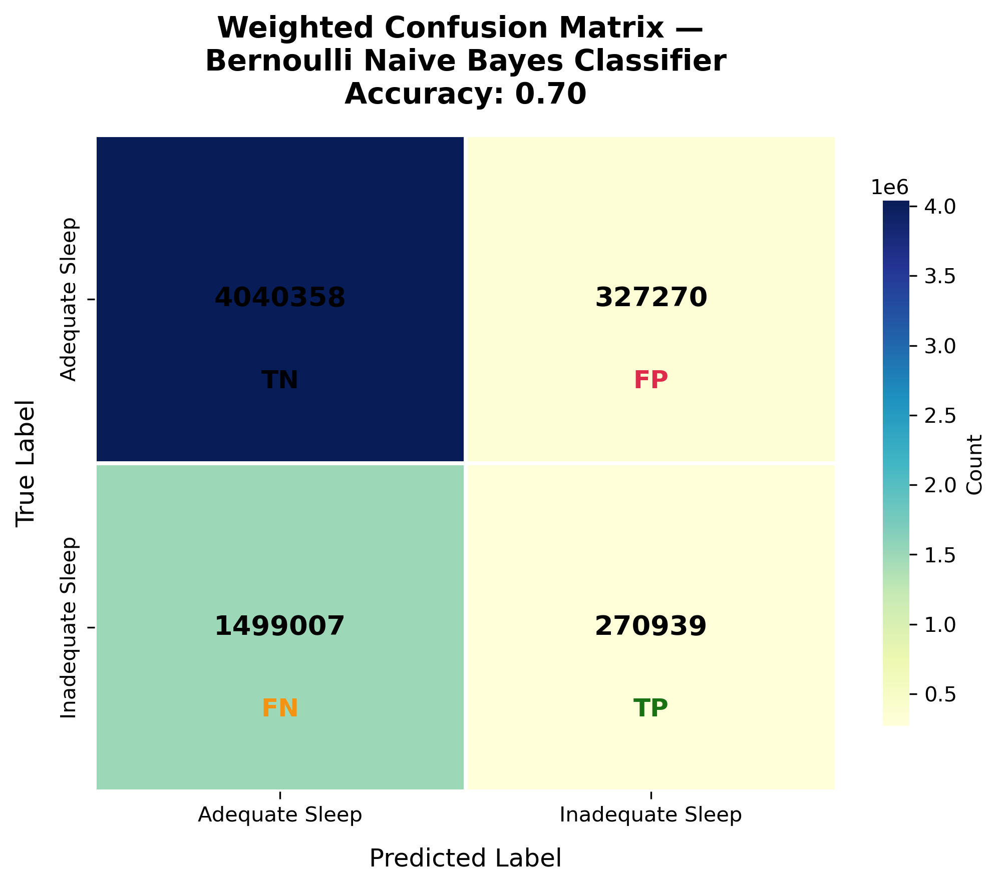
Figure 34
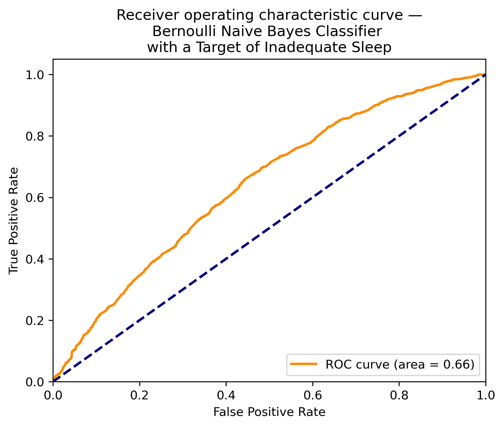
We also looked at log probabilites for the features and saw interesting patterns emerge (Figure 35). Younger children (ages 13 and 14) and children with less screen time
per day (0-2 hours) were associated with having adequate sleep for their age. Conversely, older teens (ages 16 and 17), children with greater screen time per day
(3 or more hours), children experiencing housing instability, and children with poorer health were associated with having inadequate sleep for age. We confirmed these
associations by reviewing partial dependency plots for all features (data not shown).
Figure 35
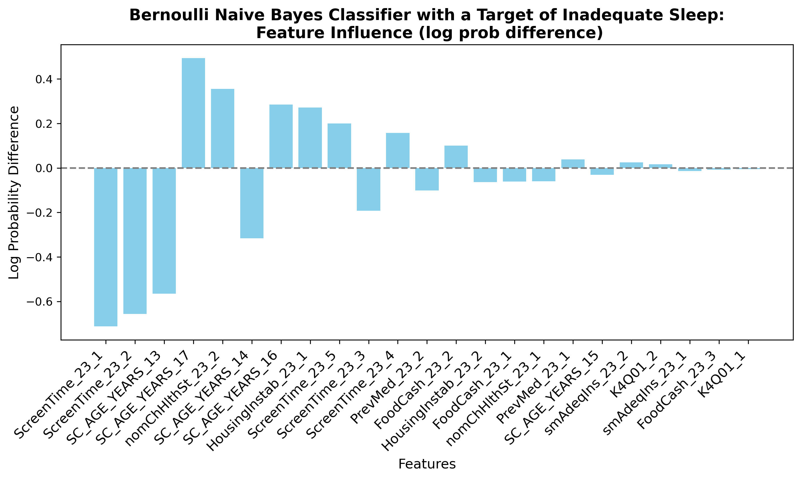
Conclusions
The American Academy of Sleep Medicine recommends that to promote optimal health, teens should regularly sleep eight to 10 hours per 24-hour period (Ref: Paruthi).
This Naive Bayes analysis found that older teens, teens using screens for 3 or more hours per day, those with poorer health, and those with housing instability
are more at risk for inadequate sleep. Helping these groups obtain enough sleep could improve overall physical and mental health for these groups.
References
Baladram, S. Bernoulli Naive Bayes, Explained: A Visual Guide with Code Examples for Beginners. Unclocking predicive power through Yes/No probability.
Towards Data Science. August 2024.
Available from: https://towardsdatascience.com/bernoulli-naive-bayes-explained-a-visual-guide-with-code-examples-for-beginners-aec39771ddd6/
Yıldırım, S. Naive Bayes Classifier – Explained. Theory and implementation with scikit-learn. Medium, Towards Data Science Archive. Feb 2020.
Available from: https://medium.com/data-science/naive-bayes-classifier-explained-50f9723571ed
Mocquin, Y. Multinomial Naive Bayes Classifier. A complete worked example for text-review classification. Towards Data Science. March 2024.
Available from: https://towardsdatascience.com/multinomial-naive-bayes-classifier-c861311caff9/
Paruthi, S., Brooks, L, D'Ambrosio, C, et. al. Recommended Amount of Sleep for Pediatric Populations: A Consensus Statement of the American Academy of Sleep
Medicine. Journal of Clinical Sleep Medicine (2016). https://doi.org/10.5664/jcsm.5866
Decision Trees
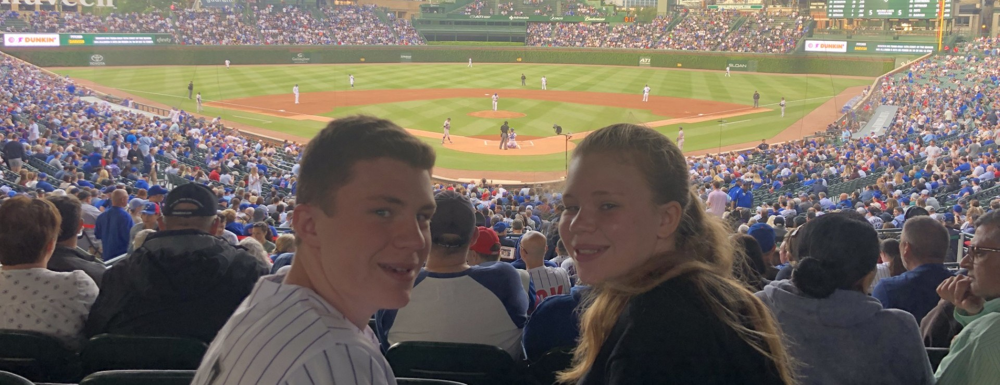
Overview
Decision Trees are a supervised machine learning algorithm for classification analysis. The root node of the tree contains the entire dataset (refer to the
illustration of the tree structure). From the root node, the tree branches out to decision nodes until a leaf or final class assignment node is met. Leaf nodes may
be pure (i.e. all datapoints in the leaf belong to the same class) or impure (i.e. the data in the lead are mixed classes).
Illustration of the Structure of Decision Trees (Source: Dash, 2022)
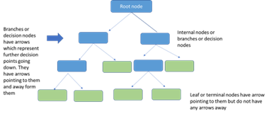
Decision nodes contain conditions by which the data are split. The algorithm attempts every possible split and uses either information gain or GINI to determine the
best split. Specifically, the goal is to implement the condition that makes the data and each child node the most predictable or homogenous in the target variable.
We can measure how mixed the data are by calculating the entropy before and after the split, and then calculate the information gain. Entropy is calculated as follows,
where "s" is the subset of data, "k" is the number of possible classes (e.g. Yes/No), and \P_i is the proportion in class i:
Entropy ranges from zero to one inclusive. Entropy of zero indicates perfect purity, where all datapoints are from the same class, while entropy of 1 is perfect
impurity (i.e. a 50/50 split between classes). As the depth of the tree increases the entropy decreases. With these calculations of entropy we can calculate the
information gain.
\[
\text{Information Gain} = \text{entropy of the parent node - entropy of the child nodes}
\]
Illustration of Decision Tree Slitting (Source: Modified from Dash, 2022)
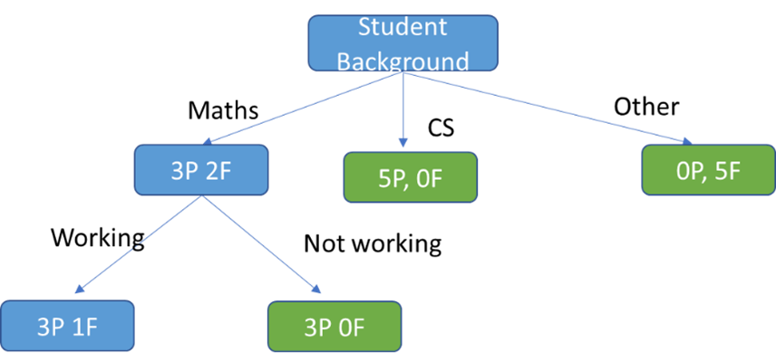
The image above illustrates the calculation of entropy and information gain for the decision tree. The entire system has an entropy of 1 or perfect impurity because
the data are split 50/50 at the root node. The first split using the student's background reduces the entropy dramatically, since the computer science students all
passed and the students from other backgrounds all failed the test. These nodes in green are pure leaf nodes (i.e. entropy = 0). Since math students still have a mix
of outcomes, the blue node is further split by whether or not the student is working. Lastly, the information gain of the tree is calculated as the entropy of the
system minus the average child node. The information gain is about 0.8.
Alternatively, we can determine the best split using the GINI index. The GINI Index calculates the probability of misclassifying a random instance. Because we don't
want to incorrectly classify a record, a lower GINI index is better. The formula for the GINI Index is as follows, where "j" is the number of possible classes
(e.g. Yes/No), and \P_i is the proportion of the class in the node:
\[
Gini = 1 - \sum_{i=1}^{j} P_i^2
\]
Since decision trees are easy to interpret and understand, they have a variety of uses. A recent article from Geeks for Geeks (Decision Trees) noted six applications
of Decision Trees, as follows:
Bankers determine whether to accept or reject a loan application based on factors like credit score, income, employment status and loan
history.
Health providers may diagnose diseases considering factors like symptoms, biomarkers, family history, and demographics.
Educators predict whether students will pass or fail given student attendance, study time and past performance.
Businesses predict whether a customer will leave or stay based on purchasing history, behavioral choices and length of tenure.
Fraud Detection: In finance, Decision Trees are used to detect fraudulent activities, such as credit card fraud. By analyzing past transaction data and patterns, Decision Trees can identify suspicious activities and flag them for further investigation.
A decision tree can also be used to help build automated predictive models which have applications in machine learning, data mining and statistics.
Data Prep
This analysis uses the state-level data from NSCH and AHR. The following continuous state-level features were kept:
percentage of children in excellent or very good health, percent of children who had a place they usually went to for healthcare,
percent of children receiving at least one preventative care visit, percentage of adults age 25 and older with at least a high school diploma or equivalent,
percentage of the population younger than age 18, percentage of households living at or above the federal poverty level,
public health funding per capita, and sum of the social support and engagement measures. The target variable was contructed as good insurance coverage if the
state is both above the mean of states for residents having any insurance (Insured from AHR) AND above the mean of states for children having continuous and
adequate insurance (Insurance from NSCH).
Figure 36
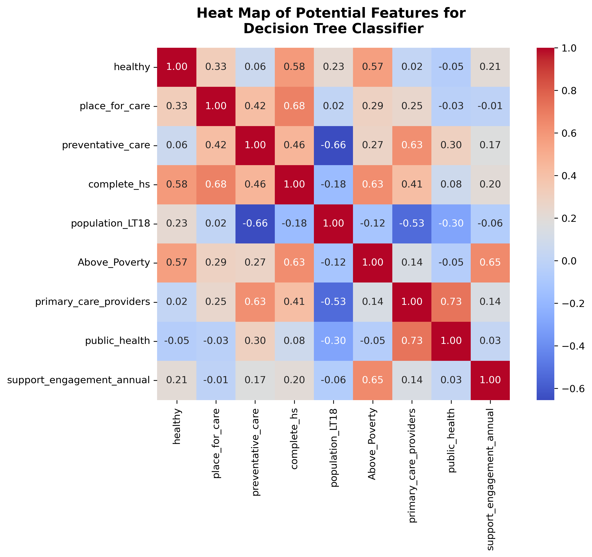
Code
The following Python program contains the code for the decision tree analysis:
6_NSCH_AHR_Decision_Tree_Analysis.
The first step of the code is to read in the state-level data from NSCH and AHR. Next, the following continuous state-level features were kept:
percentage of children in excellent or very good health, percent of children who had a place they usually went to for healthcare,
percent of children receiving at least one preventative_care visit, percentage of adults age 25 and older with at least a high school diploma or equivalent,
percentage of the population younger than age 18, percentage of households living at or above the federal poverty level,
public health funding per capita, and sum of the social support and engagement measures. Social support and engagement measures is missing for Washington DC. This missing
value has been replaced with the median social support. The target variable was contructed as good insurance coverage if the
state is both above the mean of states for residents having any insurance (Insured from AHR) AND above the mean of states for children having continuous and
adequate insurance (Insurance from NSCH).
Next, the decision tree classifier is instanciated, fit with the above target, feature and sample weight variables, and tuned using the training data. For the
hyperparameter tuning a max_depth of 8, 9, 10, and None and min_samples_split of 2, 4, 6 were assessed with criterion='gini', splitter='best' and min_samples_leaf=1.
The resulting hyperparameters for the optimal model were: 'ccp_alpha': 0.0, 'class_weight': None, 'criterion': 'gini', 'max_depth': 8, 'max_features': None,
'max_leaf_nodes': None, 'min_impurity_decrease': 0.0, 'min_samples_leaf': 1, 'min_samples_split': 2, 'min_weight_fraction_leaf': 0.0, 'monotonic_cst': None,
'random_state': 4567, 'splitter': 'best'. Measures of model performance are calculated,
including weighted accuracy, recall, f1-score and ROC/AUC for the test set. This follows with the calculation of feature imporance based on mean decrease in impurity.
Additionally, the trees is plotted to assess how the data are split. Finally, partial dependency plots are created for each feature.
The Python program for the random forest analysis is located here:
7_NSCH_Random_Forest_Analysis.
The first step of the code is to read in the family-level data from NSCH. Next, the following features were kept and missing values were replaced with the mode:
child's screen time usage, child's age, housing instability, family food and cash assistance, adequate and continuous insurance, health status, preventative care
visits, and a place to get health care. Dummy variables were created for the features and the reference categories were dropped. The target variable of inadequate
hours of sleep for age was also kept and replaced with the mode if missing. Features, target and sample weights are split into training and test sets.
Next, the random forest classifier is instanciated and fit with the above target, feature and sample weight variables using the training data. The following hyperparameters were used:
'bootstrap': True, 'ccp_alpha': 0.0, 'class_weight': 'balanced', 'criterion': 'gini', 'max_depth': None, 'max_features': 'sqrt', 'max_leaf_nodes': None,
'max_samples': None, 'min_impurity_decrease': 0.0, 'min_samples_leaf': 1, 'min_samples_split': 2, 'min_weight_fraction_leaf': 0.0, 'monotonic_cst': None,
'n_estimators': 100, 'n_jobs': None, 'oob_score': False, 'random_state': 4567, 'verbose': 0, 'warm_start': False. Measures of model performance are calculated,
including weighted accuracy, recall, f1-score and ROC/AUC for the test set. This follows with the calculation of feature imporance based on mean decrease in impurity. In
order to gain an understanding of how the model was splitting features, one of the trees is plotted. Finally, partial dependency plots are created for each feature.
Results
The decision tree with the state-level outcome of good insurance was fit on the training set, which included 35 states (~70%). The model performance was assessed on the
test set of 16 states. As shown in Figure 37, the model performed pretty well with an accuracy was 0.75. The f1-score (0.60) and recall (0.60) were better than chance.
Per capita spending on public health topped the important features with a feature importance score of 0.5 (Figure 38). Although to a lesser degree, other important
features for predicting good insurance included the proportion of the population above the poverty line, use of preventative care, health status of the population
and a supportive community.
Figure 37
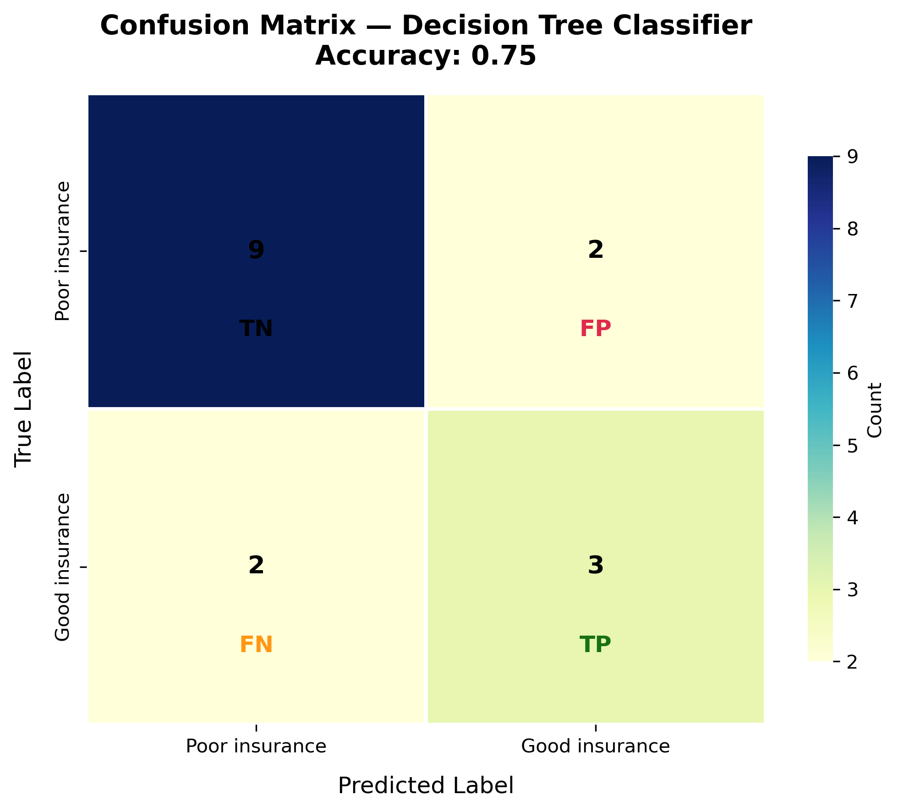
Figure 38
The optimal decision tree had a mx depth of 8. For illustrative purposes, Figure 39 shows the first few levels. As seen with the feature importance analysis
public health plays an important role in the classification by splitting the root node at less than or equal to $146 per person spent on public health. For context
the median value of public health spending is $123 per person. Branching to the left, 25 states spent $146 or less per person on public health and 23 of these were
classified as not good insurance. In contrast, ten states branched to the right because they spent more than $146 per person on public health. Eight of these states
were classified as meeting good insurance coverage.
As illustrated by Figure 40, the ROC-curve of the test data yielded an area under the curve of 0.709. This indicates that the model has a good ability to
distinguish between states with and without good insurance coverage.
Figure 39
Figure 40
Conclusions
The decision tree with the state-level outcome of good insurance found that per capita spending on public health of at least $147 per person deliniated the data fairly well into states with and without good
insurance coverage. This has important implications for states hoping to bolster insurance coverage for their residents. Since the median public health spending is $123, on average states would only need to
increase their spending by approximately $20-$23 per person in order to reach this threshold. Such an investment could provide residents with greater access to health coverage. According to the American Hospital
Association, "studies confirm that coverage improves access to care; supports positive health outcomes, including an individual’s sense of their own health and well-being; incentivizes appropriate use of health care resources; and reduces financial strain
on individuals, families and communities.
References
Dash, S. Decision Trees Explained – Entropy, Information Gain, Gini Index, CCP Pruning. Though Decision Trees look simple and intuitive, there is nothing very
simple about how the algorithm goes about the process deciding on... Towards Data Science. November 2022.
Available from: https://towardsdatascience.com/decision-trees-explained-entropy-information-gain-gini-index-ccp-pruning-4d78070db36c/
Decision Trees. Geeks for Geeks. June 2025.
Available from: https://www.geeksforgeeks.org/machine-learning/decision-tree/
Schoen C, DesRoches C. Uninsured and unstably insured: the importance of continuous insurance coverage. Health Serv Res. 2000 Apr;35(1 Pt 2):187-206. PMID: 10778809; PMCID: PMC1089095.
American Hospital Association. Report: The Importance of Health Coverage.